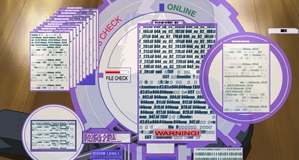
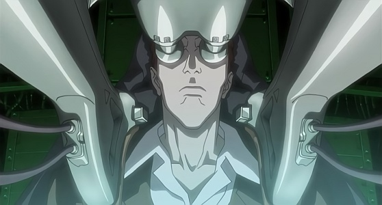
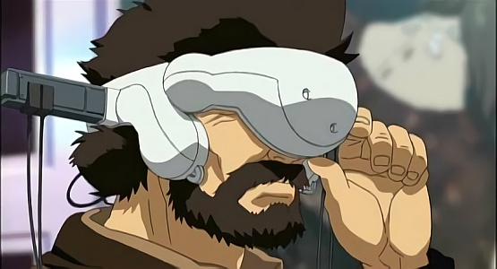
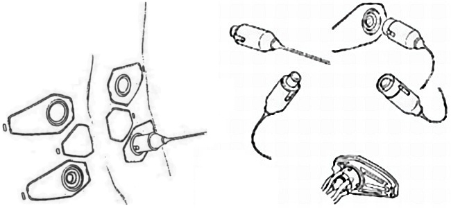
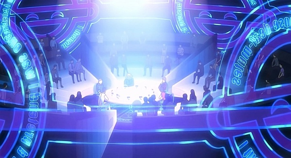
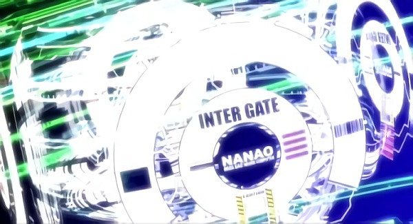
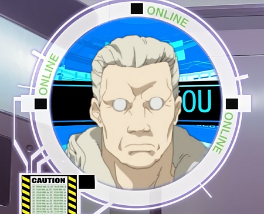

L'ÂGE DE L'INFORMATION
Netrunning, Piratage et Combat Informatique
- Introduction
- Principes généraux
- Software
- Hardware
- Exemple de netrun
- Infiltration de cyber-cerveaux et de Ghosts
- Combat informatique
- Glossaire
- Actions de hack
1. Introduction
Oubliez tout ce que vous savez sur les ordinateurs. Oubliez tout ce que vous savez sur Internet. Tout a changé depuis la Révolution Cybernétique. La plupart des gens ne possèdent même plus d'ordinateurs, mais des terminaux. Avec des réseaux massifs de milliards d'ordinateurs et de cyber-cerveaux la population partage désormais une base de données d'informations en commun. La quantité de connaissances partagées sur Internet s'est accrue exponentiellement, augmentant au carré tous les cinq ans jusqu'à finalement atteindre, au début de cette décennie, une telle masse d'octets que s'ils étaient imprimés sur papier, cela comblerait le système solaire...
Sans noyau central, le Net est désormais alimenté par les cerveaux des utilisateurs cybernétiques y accèdant chaque jour. L'information n'est plus transférée par câble mais par des satellites et des antennes relais. Il n'y a plus d'endroit sur Terre qui ne soit couvert par le Net. Si une personne avec un cyber-cerveau vit quelque part, le Net va s'étendre jusqu'à ce lieu. Tout ce que nous savions du Net est obsolète, et est désormais remplacé par de nouveaux concepts dont la génération précédente n'avait même pas rêvé. Les individus peuvent se souvenir de chaque moment de leur vie en mémoire, les exporter vers un média d'enregistrement, et les "visualiser" à tout instant. Ils peuvent littéralement parler en binaire avec un ordinateur, leur cerveau pensant bien plus rapidement qu'ils ne pourraient taper sur un clavier. Bientôt il arrivera un temps où ne pas avoir de cyber-cerveau fera de nous une antiquité ou l'équivalent d'un néandertalien de nos jours. Vous évoluez ou vous restez sur le bord de la route.
Dans le futur, toute personne évoluant dans l'âge de l'information possède un cyber-cerveau. Cela s'est accompagné d'une recrudescence des crimes liés à l'information proportionnellement à la croissance de celle-çi. Alors que la criminalité augmentait, le besoin d'améliorer les défenses augmentait de la même façon. Rapidement, les firewalls protégèrent non seulement les ordinateurs mais aussi nos propres cerveaux. Tandis que les hackers devenaient de plus en plus nombreux, leur pouvoir grandissait. Bientôt ils furent capables de pénétrer un firewall et d'altérer non seulement les perceptions d'un individu mais également sa mémoire. De nouveaux firewalls émergèrent pour combattre ces nouveaux crimes. Des firewalls actifs existent tant pour protéger les cyber-cerveaux et les mémoires externes que toutes les formes d'intelligence artificielle (AI). Ces barrières existent à deux niveaux : celle de surface contrôle l'interface cybernétique avec le monde extérieur. Elle régule les communications avec les sources externes, communications nécessaires pour accéder au Net. La seconde barrière est celle du Ghost. Une partie sert d'interface entre l'information digitale et la mémoire organique et l'autre empêche de plonger trop profondément dans le cerveau de quelqu'un. Bien entendu une personne peut autoriser un tiers à le faire si elle le désire. Accéder est une chose, altérer est une toute autre affaire.
Avant, les hackers pouvaient copier, supprimer et altérer l'information. En fait c'est tout ce qu'ils pouvaient faire. Maintenant ils peuvent également altérer les perceptions, générer une réalité, fabriquer des souvenirs et même prendre le contrôle de l'esprit de quelqu'un. Les hackers dans le futur constituent un bloc puissant. Ils opèrent des deux côtés de la barrière : défenseurs et attaquants. Certains plongent simplement pour découvrir des secrets, pour en savoir plus, pour avoir la liberté d'aller n'importe où et de pouvoir tout voir. D'autres plongent pour le pouvoir, ils veulent dominer. Dans ce monde, vous n'avez plus besoin d'être grand ou fort pour être aux commandes. Maintenant même le plus chétif peut contrôler les masses, tout ce dont il a besoin est une connexion et le talent pour aller là où il n'est pas censé aller.
Heureusement, il y a pour l'instant plus de défenseurs que d'attaquants et la plupart des cyber-cerveaux traverseront leur existance sans jamais connaître une seule tentative de hack. Les firewalls les plus simples sont plus que suffisants pour réguler le trafic d'information et bloquer les indésirables. Mais les mécréants existent bien. Les plus redoutés sont les Super-Hackers de classe A. La rumeur veut qu'ils soient au mieux une douzaine dans le monde. Ce genre de hackers peut altérer l'esprit d'une façon que l'on pensait précédement réservée aux dieux. Ils peuvent complétement réécrire les souvenirs d'un individu, et même modifier sa personnalité. Plus que tout, ils peuvent plonger dans le Ghost, c'est-à-dire naviguer dans le subconscient d'une personne, voir ce qu'ils veulent, changer ce qu'ils veulent et ignorer le reste. Les barrières s'améliorent, et les hackers font de même. Actuellement elles peuvent contre-attaquer, désorienter et même tuer ses attaquants. Toutes les polices du monde ont des sections spécialisées dans le cybercrime.
L'information numérisée submerge réellement toute la planète maintenant. Surfer sur le Net dans ce nouvel âge est aussi différent aujourd'hui que ne l'était le téléphone par rapport à Internet au début du 21e siècle. Dans le futur, tout est cybernétisé, tout est informatisé... tout peut être contrôlé, rien n'est sûr.
Le Net est vaste... et peuplé...
Cyber-cerveaux
Le rapprochement entre le Net et le corps humain a commencé avec des terminaux portables, puis a évolué vers des terminaux implantables (Neuromat) qui ont projeté l'humanité vers une nouvelle ère où l'homme et la machine ont fusionné. Cette intégration a été permise grâce à l'implantation de terminaux de communication dans le corps, permettant au corps et à l'esprit d'interagir directement avec les ordinateurs et les réseaux. Ces implants ont progressivement supplanté la technologie obsolète des terminaux portables, et ont évolué en prototypes des premiers cyber-cerveaux. Lorsque la technologie en progression constante a introduit une utilisation pratique des micromachines, les cyber-cerveaux sont devenus aussi fiables que bon marché. Cela a induit une popularisation rapide des cyber-cerveaux dans les pays avec peu ou pas de restrictions religieuses, comme le Japon. La nouvelle prévalence des cyber-cerveaux a introduit une nouvelle anxiété sociale : les gens étaient exposés aux risques de hack du cerveau du fait de leur connexion neurale avec la communauté des détenteurs de cyber-cerveaux. Le crime le plus sérieux étant le hack de Ghost, un cas dans lequel l'individualité d'une personne (son intégrité physique et mentale) devenait la cible du hacker. De nombreuses contremesures furent prises, tel que le développement de murs de protection et autres barrières, ainsi que le renforcement de la régulation et l'intensification de la sécurité dans le système de réseau neural. Ce qui n'a réussi en rien à stopper la prolifératin des cybercrimes et a engendré une course aux armements, avec d'un côté le développement de murs et barrières protecteurs toujours plus perfectionnés, et de l'autre l'émergence de hackers plus intelligents et originaux.
-- Yoshiki Sakurai
Se déplacer à travers le Net
Contrairement aux anciennes conventions de la science-fiction, on ne se déplace nulle part. La représentation graphique du Net est une expérience purement optionnelle, utilisée parfois par les hackers quand ils plongent dans les ports d'accès de zones sécurisées. Néanmoins ces icônes et espaces virtuels sont purement représentatifs, il n'y a pas de mouvement. Les internautes créent rarement un avatar et la plupart des cyber-attaques n'ont pas de représentation graphique. La vision hollywoodienne n'a simplement pas lieu d'être.
Hacker ne requière ni carte, ni icônes. L'imagerie prend sa véritable ampleur uniquement lorsque l'on pénètre les Intergates pour entrer dans la mémoire. A part ca, les graphismes sont purement optionnels. On doit "simplement" localiser la mémoire, puis pénétrer les firewalls, et enfin initialiser les attaques. Une fois les firewalls franchis, les hackers sont libres de faire ce qu'ils veulent. En fait, la cible ne saura peut-être même pas qu'elle est attaquée.
2. Principes généraux
a. Attributs et défense
Attributs : les attributs les plus important pour accéder au Net sont l'Intelligence (INT) et la Technique (TECH). Votre sauvegarde de TECH (jet 1D10 sous votre TECH) vous permettra d'éviter certains effets des attaques hack.
- Votre TECH est la base de vos firewalls lors d'attaques et de tous les jets de défense sur le Net en général.
- Votre INT est utilisée pour reconnaître les attaques, en effectuer et infiltrer des firewalls en utilisant les compétences Interface et Connaissance des Systèmes. Enfin elle définit votre efficacité en combat informatique (en déterminant combien et quelles attaques vous pouvez utiliser).
Néanmoins, vos INT et TECH peuvent être endommagés pendant les combats sur le Net. Ceci affectera votre efficacité pour la suite car votre nombre d'attaques va être réduit.
Firewalls de défense : votre défense à l'aide de firewalls est un nombre fixe à l'instar de vos points d'armure. Bien qu'une personne ne soit pas forcément au courant qu'elle est attaquée, ce nombre ne sera pas diminué. Il est séparé en deux, la défense de surface et la défense de Ghost. Vous pouvez posséder plusieurs firewalls mais ils n'augmentent pas la valeur de Défense, ils sont juste des défenses supplémentaires à contourner par le hacker avant l'accès aux données.
Défense de surface (DS) : cette défense est utilisée pour se défendre contre les tentatives de pénétration dans l'interface de connexion d'un cyber-cerveau avec l'extérieur (audio, visuel, tactile, etc). Ce firewall est nécessairement partiellement ouvert pour permettre la communication avec le Net. Abattre cette défense permet au hacker d'altérer plus ou moins les perceptions de la cible (selon les attaques utilisées).
Firewall de surface : 10 + TECH + valeur du firewall + bonus éventuels
Défense de Ghost (DG) : toujours plus élevée que la Défense de surface, ce firewall protège le Ghost et sa mémoire des attaques extérieures. Comme tout firewall, il peut être ouvert volontairement pour laisser quelqu'un accéder à des souvenirs spécifiques. Il est également capable de contre-attaquer grâce à ses défenses actives. Vous devez contourner le(s) firewall(s) de surface avant de tenter de passer le(s) firewall(s) de Ghost.
Firewall de Ghost : 15 + TECH + valeur du firewall + bonus éventuels
b. Une compétence, de multiples usages
Un netrunner est plus ou moins doué ou spécialisé dans certaines opérations de piratage et connaît mieux certains types de cibles que d'autres. Pour représenter cela nous allons découper la compétence Interface en dix Commandes et dix Cibles. Chaque Commande et Cible aura une valeur de 1 à 5 et dénotera l'expertise et les programmes dont le netrunner dispose pour s'attaquer à une cible donnée, ou effectuer certaines tâches. Le netrunner va distribuer son Interface x 10 entre ces différentes Cibles et Commandes.
Par exemple : pour une compétence Interface de 8, 80 points à repartir entre ses 10 Cibles et 10 Commandes (en donnant une valeur de 1 à 5 à chaque).
Liste des Cibles et Commandes
Commandes :- Localiser : trouver physiquement ou virtuellement.
- Information : recherche d'information sur le sujet (version, constructeur, etc).
- Discrétion : se camoufler afin empêcher la détection.
- Editer/Supprimer : altérer la cible ou sa programmation.
- Contrôler : prendre le contrôle et exécuter les opérations normales de la cible.
- Infiltrer : obtenir l'accès sans permission, passer la sécurité d'une cible.
- Sécuriser/Défendre : empêcher l'infiltration, modification ou contrôle de la cible par un tiers. Permet également de défendre lors d'un combat cyber.
- Encryptage : rendre la cible indéchiffrable par un tiers.
- Décryptage : déchiffrer une cible encryptée.
- Exécuter/Attaquer : exécuter un logiciel (virus, ICE) dans un système contrôlé. Permet aussi d'attaquer lors d'un combat cyber.
- Mémoire/Fichier : évident.
- Cyber : cybernétique.
- Comm. : tout système de communication digital (téléphone, lien cyber-cerveau, réseau filaire, etc).
- Capteur : matériel pour acquérir/mesurer des données (caméra, micro, capteur de chaleur, de toucher, de mouvement, etc).
- Radiocommandé : système mobile opérant sous le contrôle d'un utilisateur ou d'un système à distance (ex : drone).
- Interface Réseau : matériel utilisé pour interfacer un utilisateur ou un système avec le Net (CyberModem, interface réseau d'un CC, etc).
- Véhicule : évident.
- Arme : arme contrôlée un système électronique (smartgun, liaison superarme, etc).
- Système : système d'exploitation (OS) d'un matériel électronique.
- Utilisateur/Sysop/netrunner/IA : humain (ou Intelligence Artificielle) connecté au système ou matériel.
Note : dans la suite du document on se référera à ces demi-compétences par les termes Commande() et Cible().
Comment l'utiliser : pour chaque action entreprise par le netrunner, il va choisir une Commande et une Cible et ajouter la valeur qu'il a mise dans chaque pour déterminer la valeur totale de sa compétence pour cette action. Exemple : si un netrunner a Localiser(4) et Véhicule(3), sa compétence sera de 7 pour essayer de trouver une voiture via les systèmes de localisation sur le Net.
Jet à effectuer : INT + Commande() + Cible() + 1D10 qui doit battre un Difficulté (Diff) qui dépendra souvent du type de cible.
Lorsque la compétence Interface augmente d'un point, le netrunner distribue 10 points parmi les 20 Commandes et Cibles (dans la limite de 1 à 5).
En règle générale on suivra ce modèle :| Difficulté | Exemple de cible |
| 15 | Site internet public ou corporatif ayant pignon sur rue |
| 20 | Cible peu sécurisée (école ou réseau de PME) |
| 25 | Ordinateur personnel connecté au Net (poste fixe) |
| 30 | Réseaux corporatif, police, agence gouvernementale non publics |
| 35+ | Serveurs et réseaux corporatifs et militaires top secrets |
c. Préparatifs avant un netrun
Un netrunner peut moduler légèrement sa panoplie de programmes, virus et optimisations au début d'un netrun. Il peut ainsi transférer temporairement deux niveaux de sa compétence dans une Cible vers une autre Cible (pareil pour les Commandes). Il peut faire ceci autant de fois qu'il veut. Cette préparation prend une dizaine de minutes et ne peut donc en général pas être faite au milieu d'une infiltration et certainement pas au milieu d'un combat.
d. Initiative et combat physique
Les choses vont sur le Net bien plus vite que dans la réalité. Un netrunner fera donc un jet d'initiative chaque round (tout comme les combattants), mais il aura en général le double des actions pour la même durée (round de 3 secondes). Les netrunners les plus rapides sont capables d'effectuer jusqu'à 10 actions par round. Bien sûr, plus on exécute d'actions, plus on subit de malus pour chaque (comme pour un combat normal).
Initiative netrun : INT + Interface + Vitesse + 1D10 (2D10 et plus pour certains cyber-cerveaux)
Le netrunner dispose en général de 2 actions par tranche de 10 points d'initiative (0-10 : 2 actions, 11-20 : 4 actions, etc). Pour le combat physique, c'est 1 action par tranche de 10 points.
Par contre, contrairement au malus de -3 pour chaque action physique supplémentaire, les actions virtuelles ne coûtent qu'un point de malus chaque. Prendre ses 2 actions de netrun pour un round n'entraînent pas de malus (sauf si cumulées avec des actions physiques), en prendre 4 entraîne un malus de -4, 6 un malus de -6, etc.
Si un netrunner est interfacé et veut pirater alors qu'il est en combat physique, il devra lancer une initiative netrun et une initiative normale pour savoir quand agir dans chaque monde. Il subira un malus à toutes les actions selon le nombre d'action effectuées (physiques + virtuelles).
Par exemple : avec un jet de 15 en initiative physique et de 25 en initiative netrun, cela permet un maximum de 2 actions physiques et 6 actions virtuelles. Effectuer toutes ces actions en 3 secondes entraînerait un malus de -12 à tous les jets ! Par contre si le netrunner reste planqué derrière une benne et s'occupe uniquement du piratage, ses 6 actions de netrun seraient seulement à -6 chacune.
3. Software
Un netrunner programme ses logiciels lui même (virus, contre-mesures électroniques, sniffers de paquets, crackeurs de code, décrypteurs, bombes logiques, etc). Tous les programmes du marché sont identifiés et les firewalls les sentent venir avant même qu'ils ne puissent faire quoi que ce soit. Ces logiciels maison sont déjà compté dans le niveau de compétence (Commande et Cible), mais un netrunner peut également programmer quelque chose de spécifique avant d'aller au feu s'il a des informations sur la cible. Il peut aussi acheter un logiciel jetable auprès d'un autre netrunner mais une seule fois, car aussitôt l'attaque déployée, les firewalls adaptatifs vont construire une défense spécifique, et la communiquer au reste du Net en moins d'une heure. La progammation prend du temps, mais peut être d'une aide précieuse pour l'attaque qui va suivre.
Programmer soi-même nécessite un jet de Bibliothèque (comme pour localiser) puis un jet de Connaissance des Systèmes, et enfin jet de Programmation. Ajouter les marges de réussite de ces trois jets (contre la difficulté spécifique au type de cible). Le total des marges de réussite divisé par 5 constitue le bonus total accordé par ce programme lors de cette attaque (pour tous les jets, y compris le jet de localisation). Pour chaque +1 de ce bonus il est nécessaire de consacrer deux heures de préparation.
On peut également acheter le programme, chaque +1 du programme coûtant 500 eb (négociable évidemment).
a. Virus
Les virus existent sous de nombreuses formes. Ils sont si prévalent que tous les détailer prendrait un livre en soi. Ce qui suit décrit les différentes méthodes pour créer et implémenter des virus de base. En général, pour concevoir un virus, le programmeur fait un jet de Programmation. Chaque jet prend une heure de travail. La difficulté reflète la complexité et le nombre de fonctionnalités que le programmeur tente d'incorporer.
Faire un vaccin : un virus informatique est similaire à un virus organique, un vaccin peut donc être créé pour en contrer les effets. C'est un programme qui détruit le virus et défait ses effects négatifs (à moins que ceux-ci ne soient permanent). Créer un vaccin nécessite un jet de Programmation supérieur au jet que le programmeur a obtenu pour créer le virus. Cela requière également une heure par jet. Une copie originale du virus est nécessaire, que ce soit un spécimen obtenu sur une personne/système infecté ou une copie de sa source. Le vaccin peut ensuite être envoyé aux personnes que l'on veut protéger ou désinfecter. Les vaccins sont des programmes qui ne modifient pas les données d'un cyber-cerveau, mais y chassent des programmes qui ne devraient pas être là. C'est donc une action de surface qui ne nécessite pas de passer au travers des firewalls pour être effective.
Empreinte de virus : obtenir une copie d'un virus et le décompiler permet d'obtenir une empreinte spécifique à son programmeur. Il n'en révèle pas l'identité ou les coordonnées, mais permet de déterminer la signature (la patte) du programmeur. Deux virus écrit par la même personne vont avoir suffisamment de similarités pour les faire correspondre. Cette empreinte ne peut être changée, vu qu'elle n'en est pas vraiment une mais plutôt une façon de programmer.
Utiliser des virus : les virus possèdent une compétence en Interface qui leurs sont propres, elle est égale à celle de leur programmeur - 5. Ils ont également un nombre d'attaque Hack égal à celui du programmeur mais qu'ils ne peuvent intervertir. Il faut choisir leurs actions et la séquence dans laquelle ils les utilisent, séquence dont ils ne peuvent dévier. Les virus peuvent être implantés ou utilisés pour faire un hack. Dans ce cas, ils le font avec une capacité réduite, mais cela protège le cyber-cerveau du programmeur des dégâts potentiel à l'INT. Un virus attaqué est automatiquement détruit. Un cyber-cerveau peut uniquement contenir un nombre de virus égal à l'INT/2. Le programmeur peut implanter des actions dans le virus, en faisant des jets lors de la programmation comme s'il effectuait lui-même ces actions. Chaque action ainsi implantée prend une heure, qu'elle le soit avec succès ou non, un perte de temps résultant de l'échec. Ces actions ne peuvent causer de dégâts car le virus n'a pas de source d'énergie, à moins qu'il ait la fonction "Traqueur" (il utilise dans ce cas une source électrique externe). Les virus ne bénéficient pas des bonus pour connexion directe via prise QRS ou pour l'utilisation d'un cyberharnais.
Exemple : Nanao A veut utiliser un virus à action retardée avec clé de cryptage militaire pour prendre le contrôle de gardes de sécurite afin de tenter un assassinat. La mémoire requise est de type Basique : Action retardée 5 + Base de données 2 + Basique 15 = 22. Le danger réside dans la compétence en Programmation de Nanao et le fait que la base de données contient la clé de cryptage.
Programme de suicide cellulaire : un programme-tueur qui déclenche l'apoptose (fonction de mort celluaire) dans toutes les cellules du corps, conduisant ainsi à la mort de la personne. Afin d'adapter le riz micromachine (riz MM) à n'importe quel environnement, ce phénomène biologique a été réécrit au niveau génétique et peut donc être déclenché à tout moment. Si jamais une personne absorbe un tel riz modifié, elle meurt par apoptose générale lorsque le programme est activée.
b. Types de virus & fonctions
- Type de virus : en relation directe avec le nombre d'actions que le virus peut prendre.
- Fonctions : chaque virus peut avoir autant de fonctions qu'il en a besoin ce qui augmente sa difficulté et son temps de programmation.
- Difficulté : le jet de Programmation nécessaire pour écrire le virus.
- Mémoire : le nombre d'actions que le virus peut effectuer.
|
|
Banque de données : la base de données (ou databank) est une section du virus qui contient de l'information pouvant être utilisée à un moment donné. Un virus peut également attaquer pour remplir cette base ou commencer avec ses propres données afin de l'aider dans sa tâche (comme une clé de cryptage par exemple).
Action retardée : le virus sera actif après un certain temps, ou lorsque une commande ou un évènement se déclenche. Si le virus est dans un cyber-cerveau verrouillé ou isolé, cette commande pourrait ne jamais venir.
Evolution : une version mise à jour des virus HA. Les virus Evolution ont le double des actions contenues en mémoire, et peuvent interchanger ces actions additionnelles avec celles en mémoire à tout moment. De plus, le virus n'est plus obligé d'attaquer en séquence et peut ainsi utiliser n'importe laquelle de ses attaques dans n'importe quel ordre.
HA-1 : les virus HA (Hyper-Attaque) sont des virus d'attaque qui sont exempt d'avoir une mémoire fixe et de suivre les actions en séquence. Ils peuvent échanger les attaques contre celles contenues dans la mémoire. Le HA-1 contient une action supplémentaire en mémoire qu'il peut interchanger instantanément.
HA-3 : trois espaces mémoire supplémentaires.
HA-5 : cinq espaces mémoire supplémentaires.
Micromachine : les virus micromachines sont une espèce rare et fort dangereuse. Ce sont des nanomachines qui transportent le virus, à la place d'être acheminé numériquement. Ceci leur permet de circonvenir tous les firewalls de surface et d'attaquer le cyber-cerveau directement. Ils sont heureusement très difficile à manipuler et doivent utiliser deux espaces mémoire. Ils ne peuvent se propager par le réseau car leur vecteur est physique. Les nanomachines doivent être insérées physiquement dans le corps, inoculé par seringue/fléchette ou ingérées (dans de la nourriture par exemple). Ces nanomachines sont trop complexes et doivent être achetées (500 eb par dose). Certaines peuvent également affecter le reste de l'organisme (voir le programme de suicide cellulaire).
Modulaire : similaire aux Toy Bombs, ils sont camouflés en mail ou insérés dans l'en-tête d'un fichier-vecteur (film, image, etc) et se compilent lorsque les conditions requises se présentent. Lors de l'attaque du Super-intendant général par le Laughing Man, l'un de ces virus était implanté dans les cyber-cerveaux des membres de la sécurité. Un virus modulaire accomplit le reste de son profil d'attaque avant de se dupliquer dans une autre cible, généralement de même type. Le programmeur doit utiliser un espace mémoire détaillant la portée et le moyen de transmission à la nouvelle cible. Un virus de ce type peut, par exemple, cibler tous les robots d'une usine, mais uniquement ceux-çi. Il finira toujours son attaque sur la cible courante avant de passer à la suivante.
Boîte de Pandore : un virus qui va commencer son attaque lors de son ouverture. Il est similaire au Toy Bomb, mais n'a pas besoin d'un jet d'Interface pour se "déguiser" et ne peut être combiné à une fonction "action retardée". Il doit être téléchargé ou implanté, mais ne peut être transmis à autrui.
Sonde : ce virus constitue une violation des lois internationales de télécommunication. Il attaque tous les systèmes dans un rayon de 150 mètres afin de trouver une cible spécifique. Il ne peut néanmoins servir qu'à localiser quelque chose et ne peut incorporer aucune action d'attaque.
Relai : la fonction relai transmet des données vers un autre entité (cyber-cerveau, serveur, IA, mémoire externe). Ces données peuvent être stockées dans la base de données du virus ou relayer la localisation d'une cible transmise par un virus traceur.
Traqueur : normalement, les virus ne peuvent causer de dégâts physique à la cible (électro-feedback ou perte d'INT). Les traqueurs en sont capable, mais sont moitié moins efficace qu'un cyber-cerveau. Le virus doit avoir accès à une source d'énergie pour pouvoir frapper (si la cible se connecte à un terminal par exemple).
Toy Bomb : ils sont camouflés au sein d'un autre programme ou d'une image par exemple, et attendent à la vue de tous, jusqu'à ce que des conditions d'exécution se réalisent (ouverture du programme ou du média en général). Les Toy Bombs doivent être téléchargés par la cible (ou envoyées par mail, etc). L'avantage est qu'ils ne nécessitent pas de pénétrer les défenses. Le programmeur doit par contre effectuer un jet d'Interface dont le résultat est la valeur de déguisement du Toy Bomb... jet consistuant la difficulté à battre pour que la cible décèle la menace.
Traceur : donne la position d'une cible. Exécutez le traceur dans un système pénétré par un hacker ou simplement accédé par un utilisateur, et il va remonter la piste et relayer la position du connecté. Cette fonction occupe un espace mémoire supplémentaire. Elle effectue un jet d'Interface en opposition avec celui de la cible. Si le traceur gagne, il localise le hacker et si le virus contient d'autres attaques, il peut également les utiliser. S'il a la fonction Relai, il peut envoyer l'information à quelqu'un d'autre pour, par exemple, envoyer des troupes ou faire un contre-hack.
Trash Bomb : tout virus qui exécute sa séquence d'attaque lors de sa suppression.
4. Hardware
La plupart des netrunners en 2040 utilisent leur cyber-cerveau pour leur "travail" car un cyber-cerveau est bien plus rapide qu'un CyberModem (outil de prédilection des netrunners dans les années 20) ou qu'un ordinateur. Il est néanmoins possible d'utiliser ces appareils obsolètes avec les malus suivants :
- CyberModem : tous les jets d'Interface et d'initiative netrun sont à -5 à moins d'attaquer un autre CyberModem.
- Terminal/ordinateur : tous les jets d'Interface et d'initiative netrun sont à -10.
Par contre ces équipements sont moins dangereux car ils disposent de disjoncteurs qui protègent le netrunner des dégâts par électro-feedback. Il va sans dire qu'attaquer une cible obsolète à partir d'un cyber-cerveau donne un bonus au jet d'interface au lieu d'un malus.
Utiliser un cyber-cerveau avec une connexion sans-fil limite la bande passante, ce qui engendre un malus de -5 pour les jets d'interfaces et pour l'initiative. Il est donc recommandé d'utiliser un câble d'interface et un terminal fixe pour les missions les plus difficiles. Par contre, avec le sans-fil, les chances de subir des dégâts sont plus faibles (le électro-feedback direct ne fonctionne pas, mais l'ennemi peut suivre votre piste et infiltrer votre cyber-cerveau et votre Ghost, et vous endommager).
Cependant, utiliser un cyber-cerveau avec plusieurs prises d'interface QRS donne un avantage certain au netrunner : +2 par câble QRS supplémentaire, jusqu'à concurrence de 4 câbles (bonus maximum de +6 donc). En revanche, utiliser plusieurs câbles augmente considérablement les dégâts lors d'une attaque par électro-feedback (chaque câble supplémentaire ajoute 1D6 points de dégâts).
La connexion sans fil d'un cyber-cerveau se fait via des relais terrestres situés partout dans les zones "civilisées". C'est une autre histoire dans la brousse. Dans ces zones sans relais, seul une connexion satellite pourra connecter un cyber-cerveau au Net. Le coût d'un tel équipement est de 5000 eb.
a. Cyber-cerveaux
Bonus prodigués par les cyber-cerveaux :
- Classe D : Vitesse 0, firewall (datawall) 10, mémoire 1 (une mémoire = une heure d'enregistrement complet).
- Classe C : Vitesse 1 (+1 aux jets de netrunning), firewall 15, mémoire 2.
- Classe B : Vitesse 2 (+2 aux jets de netrunning, +1D10 au jet d'initiative netrun), firewall 20, mémoire 4.
- Classe A : Vitesse 3 (+3 aux jets de netrunning, +2D10 au jet d'initiative netrun), firewall 25, mémoire 12.
Booster son cyber-cerveau :
- Augmenter la vitesse : pour 1000 eb, la vitesse du cyber-cerveau est boostée de 1 point, jusqu'à +5 max. Cette vitesse s'ajoute à l'initiative.
- Augmenter la mémoire : 1000 eb par mémoire supplémentaire interne (une mémoire externe coûte un quart du prix).
- Augmenter le firewall : 10-15 : 1000 eb, 15-20 : 3000 eb, 20-25 : 9000 eb, 25-30 : 18000 eb.
b. Coûts d'un système, cyberbeck
Système :- CPU : 10000 eb
- Mémoire : 4/CPU automatiquement. 5000 eb par mémoire supplémentaire
- INT : CPU x 3 (si INT >= 12, l'IA peut être contenue dans un cyber-cerveau si elle veut avoir un Ghost, mais pas nécessairement).
- Compétences : les systèmes obtiennent 5 compétences par 2 CPU. Uniquement des compétences de TECH/INT (sauf les IA : EMP également), mais toutes utilisent l'INT. Niveau 4 par défaut, +1/100 eb.
- Firewall de base = nombre de CPU, +1/1000 eb (max 10).
- Mémoire : 1 de base (10 MU), +1/5000 eb
- Vitesse : 0 de base, +1/2000 eb
- Firewall : 2 de base, +1/1000 eb (max 10)
c. Equipement
| Matériel | Coût | Description |
| Passe-Barrière | 5000 | Bonus de 2D6 aux trois prochaines attaques sur un firewall. |
| Partition de cyber-cerveau | 2000 | Les dégâts physiques sur l'INT lors d'attaque sur les cyber-cerveaux via virus ou électro-feedback sont divisés par deux. |
| Cyber-Harnais | 2000 | +10 aux jets d'Interface, Bibliothèque et Connaissance des Systèmes. |
| Disjoncteur | 500 | 25% de chance que le disjoncteur soit détruit lors d'une attaque physique. Tous les jets se font à -5. |
| Ice Breaker | 2000 | Diminue de 2D4 la défense d'un firewall passif pendant les 3 prochains rounds. |
| Lecteur de mémoires | 250 | Appareil audio/vidéo/holo pour jouer des souvenirs. |
| Câble QRS | 10 | Prise de connexion. |
| Câble QRS rétractable | 50 | Même chose mais rétractable dans un châssis. |
| Régénérateur | 10000 | Permet de récupérer 1D2 points d'INT à chaque utilisation. |
Passe-Barrière : un programme avec un dictionnaire de clés d'accès mis à jour régulièrement pour passer des firewalls sans les endommager. Il accorde un bonus de 2D6 aux trois prochains jets d'attaque sur un firewall. Après cela le logiciel ne sera plus d'aucune aide pour ce firewall, à moins que la clé d'accès ne change.
Partition de cyber-cerveau : une telle partition sépare les souvenirs et le Ghost d'un individu en plusieurs zones étanches, permettant de diminuer les dégâts d'une attaque physique. Ce système n'a pas d'inconvénient en dehors de son coût. Les dégâts sur l'INT causés par un virus ou par électro-feedback sont divisés par deux.
Cyber-Harnais : un système encombrant à très haut débit avec une plétore de logiciels et matériels pour offrir une meilleure plongée dans le Net. Donne +10 aux jets d'Interface, Bibliothèque et Connaissance des Systèmes.

Disjoncteur : un appareil branché entre un terminal (ou toute autre type de connexion au Net) et une prise QRS. Il détecte une attaque physique (via virus ou électro-feedback) et éjecte physiquement le câble, tout en absorbant le choc électrique. A chaque fois que cela arrive, l'appareil a 25% de chance d'être détruit. Dans ce cas la surcharge électrique est tout de même bloquée, mais l'appareil est inutilisable. Si le disjoncteur survit, il suffit de le réinitialiser avant de le réutiliser. Toute plongée passant par un tel dispositif se fait avec un malus de 5 aux jets d'Interface et Initiative.
Ice Breaker : c'est un logiciel qui attaque les barrières de défense de facon autonome. Il recherche les faiblesses de ces barrières et les transmet au hacker. Il ne peut être utilisé que sur les firewalls passifs, toute tentative d'utilisation sur un firewall de type militaire va détruire le programme et sans doute engendrer une risposte. Il diminue la valeur de défense d'un firewall passif par 2D4 pendant les trois prochains rounds.
Lecteur de mémoires : cet appareil est une visière qui permet de rejouer les données vidéo et audio enregistrées dans la mémoire d'un cyber-cerveau ou une mémoire externe. Cela permet simplement de revivre les expériences de quelqu'un sans avoir à utiliser la braindance, et ainsi d'éviter la possibilité d'addiction à celle-çi.

Câble QRS : câble d'un mètre permettant de connecter un cyber-cerveau à une autre prise QRS.
Câble QRS rétractable : câble retractable dans un châssis permettant de se connecter à une prise QRS.
Régénérateur : bien qu'une perte d'INT est normalement permanente, un régénérateur peut réparer un partie des dégâts, au prix d'une dégradation des connaissances du sujet. A chaque fois utilisation, le régénérateur permet de récupérer 1D2 points d'INT mais il cause la perte de 1D4 points de compétences basées sur l'INT.
d. Firewall
Les firewalls sont les seules défenses entre le cyber-cerveau et l'étendue du Net. Un cyber-cerveau peut posséder autant de firewalls que sa caractéristique TECH/2, avec un minimum de 2 (un de Surface, un pour le Ghost). Les serveurs, IA et mémoires extérieures ne sont pas limités au niveau du nombre de firewalls, mais peu en ont plus que cinq. Tout cyber-cerveau dispose d'un firewall de Surface passif de niveau 1 et d'un firewall de Ghost passif de niveau 1 gratuitement. Les bonus de défense des firewalls s'ajoutent à la Défense totale que les hackers doivent pénétrer pour accéder au cyber-cerveau.
| Type de Firewall | Prix | Défense | Labyrinthe | Rang d'Attaque | |
|---|---|---|---|---|---|
| Firewalls Civils Passifs | |||||
| Alpha - Niveau 1 | 500* | +6 | -- | -- | |
| Beta - Niveau 2 | 1500 | +8 | -- | -- | |
| Delta - Niveau 3 | 3000 | +10 | -- | -- | |
| Gamma - Niveau 4 | 6000 | +12 | -- | -- | |
| Réseau - Niveau 5 ** | 10000 | +14 | -- | -- | |
| Réseau - Niveau 6 ** | 15000 | +16 | -- | -- | |
| Réseau - Niveau 7 ** | 22000 | +18 | -- | -- | |
| Firewalls Militaires Offensifs | |||||
| Alpha - Niveau 1 | 2000 | +8 | -- | 10 | |
| Beta - Niveau 2 | 6000 | +10 | -- | 12 | |
| Delta - Niveau 3 | 12000 | +12 | -- | 14 | |
| Gamma - Niveau 4 | 24000 | +14 | -- | 16 | |
| Réseau - Niveau 5 ** | 10000 | +16 | -- | 18 | |
| Réseau - Niveau 6 ** | 15000 | +18 | -- | 20 | |
| Réseau - Niveau 7 ** | 22000 | +20 | -- | 22 | |
| Firewalls Labyrinthes | |||||
| Alpha - Niveau 1 | +50% | 5 | |||
| Beta - Niveau 2 | +150% | 10 | |||
| Delta - Niveau 3 | +300% | 15 | |||
| Gamma - Niveau 4 | +500% | 20 | |||
| Réseau - Niveau 5 ** | +800% | 25 | |||
| Réseau - Niveau 6 ** | +1200% | 30 | |||
| Réseau - Niveau 7 ** | +1600% | 35 | |||
| Boosters | |||||
| Alpha - Niveau 1 | +50% | +1/2 TECH | |||
| Beta - Niveau 2 | +75% | +3/4 TECH | |||
| Delta - Niveau 3 | +100% | +1 TECH | |||
| Gamma - Level 4 | +150% | +3/2 TECH | |||
| Firewalls Variables | |||||
| Phase 1 | 500 | +5 / 10 rounds | |||
| Phase 2 | 1000 | +10 / 15 rounds | |||
| Phase 3 | 1500 | +15 / 20 rounds | |||
| * Gratuit à l'achat d'un cyber-cerveau. ** Uniquement disponibles pour les serveurs et les systèmes, pas pour les Ghost ni pour les IA. | |||||
Basculer la défense de Ghost et la défense de surface : si un individu particulièrement paranoïaque a peur qu'un de ses firewalls soit plus vulnérable que l'autre, il lui est possible de basculer le niveau de défense de l'un vers l'autre lors de l'achat, à concurrence de la moitié de ce bonus. Par exemple : un firewall Beta offre un bonus de +8 pour la défense de surface et de Ghost. A l'achat, l'utilisateur peut donc basculer jusqu'à 4 points de l'un vers l'autre (+4/+12).
Types de firewall :- Firewalls militaires offensifs : si vous échouez lors d'une tentative de pénétration de ce type de firewall, celui-ci répond en attaquant. Et comme en général, les firewall offensifs sont tellement difficiles à infiltrer qu'ils nécessitent une connexion filaire, le risque d'électro-feedback léthal est très élevé. Les firewalls offensifs sont opérationnels que le cyber-cerveau soit conscient ou non, et ont donc leur propre Rang d'Attaque utilisé pour tous leurs jets d'Interface/Connaissances du Système (ajouter 1D10 à ce bonus pour tous leurs jets de compétence). Il est bien évident que ce genre de firewalls sont vendus uniquement aux militaires, mais on doit pouvoir en trouver au marché noir. Les firewalls offensifs disposent également des attaques "dégâts cérébraux temporaires" et "dégâts cérébraux permanents" et peuvent les utiliser sans avoir à faire de jet de compétence !
- Firewalls labyrinthes : ils forcent l'intru à passer par un dédale en apparence sans fin d'expériences simulées, rendant le voyage long et épuisant. Ces firewalls peuvent être passifs ou offensifs et ont leur propre Rang de Labyrinthe. Il faut soustraire le Rang de Labyrinthe par la marge de réussite par laquelle le hacker bat le firewall. Le résultat est le nombre de rounds que le hacker doit passer pour trouver son chemin. A l'issu de ce moment désagréable, le hacker doit effectuer un second jet de pénétration de la défense du firewall. S'il échoue, il est éjecté du cyber-cerverveau et prend des dégâts s'il sagit d'une modèle offensif. S'il réussit, il sort du labyrinthe et peut faire ce qu'il veut. Ce firewall a un multiplicateur de coût au lieu d'un coût fixe, car il s'achète en supplément d'un autre firewall. Il peut être ajouté à n'importe quel type de firewall, mais un seul labyrinthe peut être construit par firewall.
- Firewalls variables : les firewalls disposant d'une telle option peuvent booster leur défense en cas d'urgence. Si un hacker ne réussit pas à pénétrer le firewall du premier coup, celui-ci passe en mode parano et sa défense augmente de la valeur indiquée pendant un nombre de rounds égal au niveau du firewall (voir ci-dessous) multiplié par la deuxième valeur indiquée. Par exemple un firewall civil passif Gamma (4) équipé d'une option variable Phase 2 verra sa défense passer à +22 pendant 60 rounds soit 3 minutes. Le propriétaire du firewall peut le booster volontairement, mais seulement une fois par jour.
Firewalls civils passifs : ce sont les firewalls standards dont tout le monde dispose. Ils sont les moins chers, les plus communs, et donc les plus vulnérables...
Niveaux des firewalls : les firewalls disposent de niveaux Alpha (1), Beta (2), Delta (3) et Gamma (4), qui vont du plus faible au plus puissant. Certaines actions de hacking et équipments peuvent encore augmenter la défense de ces firewalls.
Boosters : un booster est une modification qui se greffe sur un firewall existant pour permettre au détenteur de mieux utiliser sa TECH pour la défense.
5. Exemple de netrun
Ice-9 se planque derrière une benne à ordure alors que ses acolytes ouvrent un feu de barrage de l'autre coté de l'allée. Elle se branche sur le Net (prise filaire sur une borne d'accès) avec son cyber-cerveau (CC : vitesse +2, bonus interface +2). Elle voit le Net autour d'elle et lance des sondes pour voir ce qu'il y a d'accessible.
Son initiative netrun (25) lui octroit 6 actions. Elle a la pêche ce soir et les prend toutes, pour un malus de -6 à chacun de ses jets.
Action 1 : elle scanne les alentours immédiats pour voir ce qu'elle peut infiltrer
Int (9) + Localiser (5) + Cible non spécifique (rien) + 1D10 (6) + bonus CC (2) - multi actions (6) = 16 contre Difficulté (15) = succès.Elle voit qu'il y a une caméra dans le coin nord de l'allée qui pourrait lui donner une bonne vue sur les gardes de sécurité, et il y a un Fenwick près de la porte de l'entrepôt. Enfin il y a un terminal connecté au réseau dans l'entrepôt.
Action 2 : elle essaie de prendre le contrôle de la caméra
Int (9) + Infiltrer (5) + Capteur (4) + 1D10 (8) + bonus CC (2) - multi actions (6) = 22 contre Difficulté (20) = succès.Action 3 : elle change l'orientation et le zoom de la caméra pour voir la porte de l'entrepôt
Int (9) + Contrôle (3) + Capteur (4) + 1D10 (5) + bonus CC (2) - multi actions (6) = 17 contre Difficulté (10) = succès.Avec la caméra elle voit qu'un des gardes est justement en train de tirer en utilisant l'arrière du Fenwick comme abri.
Action 4 : elle essaie de prendre le contrôle du Fenwick
Int (9) + Infiltrer (5) + Véhicule (3) + 1D10 (3) + bonus CC (2) - multi actions (6) = 16 contre Difficulté (20) = échec de peu, peu réessayer à +5.Action 5 : les balles fusent autour d'elle, elle grimace et essaie encore
Int (9) + Infiltrer (5) + Véhicule (3) + 1D10 (3) + bonus CC (2) - multi actions (6) + 5 = 21 contre Difficulté (20) = succès.Elle sourit sardoniquement alors que le système de contrôle du Fenwick se matérialise dans son interface. D'autres balles fusent. Elle entend un de ses collègues grogner alors qu'une balle de gros calibre s'écrase sur son gilet pare-balle. Il y a du mouvement de l'autre côté de la benne, mais elle reste concentrée sur le job.
Action 6 : elle a accès au Fenwick. Elle déclenche la marche arrière à pleine vitesse
Int (9) + Contrôle (3) + Véhicule (3) + 1D10 (5) + bonus CC (2) - multi actions (6) = 16 contre Difficulté (10) = succès.Les pneus crissent sur le béton alors que le Fenwick part en arrière, agglomérant les jambes du garde avec le béton.
ROUND SUIVANT
L'initiative netrun d'Ice-9 (18) lui donne un maximum de 4 actions. Elle les prend toutes, pour un malus de -4 à chaque. Elle découvre grâce à la caméra un autre garde juste quelques mètres derrière, en couverture derrière le coin d'un mur.Action 1 : elle envoie le Fenwick vers le garde à tout berzingue
Int (9) + Contrôle (3) + Véhicule (3) + 1D10 (8) + bonus CC (2) - multi actions (4) = 21 contre Difficulté (10) = 19 succès.Malheureusement, le monde des viandards ne bouge pas aussi vite que le Net, et l'action du Fenwick ne sera résolue que lors du prochain round. Elle sait néanmoins qu'il est en route et peut se concentrer ailleurs.
Action 2 : elle essaie de prendre contrôle du terminal qu'elle a détecté précédemment
Int (9) + Infiltrer (4) + Système (5) + 1D10 (8) + bonus CC (2) - multi actions (4) = 24 contre Difficulté (20) = succès.Action 3 : elle effectue un diagnostic de base pour voir à quoi ce système peut accéder
Int (9) + Information (2) + Système (5) + 1D10 (5) + bonus CC (2) - multi actions (4) = 19 contre Difficulté (10) = succès.Elle découvre que ce système a accès au système de sécurité de l'entrepôt.
Action 4 : elle décide donc d'ouvrir la porte principale de l'entrepôt
Int (9) + Contrôle (3) + Système (5) + 1D10 (4) + bonus CC (2) - multi actions (4) = 19 contre Difficulté (20) = échec.Comme c'est la fin du round et que le temps presse, Ice-9 décide d'utiliser un de ses points de Chance qui lui octroit +1 à ce jet. Ceci lui donne un total de 20, succès !
La porte déroulante cliquette et s'ouvre lentement. Des coups de feu s'échangent. Ice-9 se débranche et dégaine son Malorian. Elle entend un cri d'agonie et le lourd impact d'un Fenwick de 2 tonnes qui aplatit un individu contre un mur, ce qui met fin à la fusillade. La lourde porte finit de s'ouvrir.
Klick rengaine son pistolet mitrailleur Minami alors qu'Ice-9 émerge de derrière la benne.
"Putain, t'as pris ton temps ! T'as fait tes courses pour Noël ou quoi ?", Ice-9 lui lance avec un regard tueur "Ta gueule et ramasses les corps, on a du pain sur la planche !".
6. Infiltration de cyber-cerveaux et de Ghosts
Une nouvelle génération de netrunners est apparue depuis l'émergence et la généralisation des cyber-cerveaux : les hackers de Ghost. Il est en effet possible pour un netrunner talentueux d'infiltrer le cyber-cerveau d'un individu avec qui il a un contact visuel ou dont il connaît les coordonnées (voir section 5). Les cyber-cerveaux possèdent généralement un firewall de bonne facture et sont donc difficile à infiltrer, mais le jeu en vaut la chandelle. Une fois pénétré, il est possible de faire pas mal de choses, comme modifier ce que voit et entend la cible (pour vous rendre invisible à ses yeux ou au contraire faire apparaître des visions), paralyser la personne, jouer avec sa cybernétique, écouter ses conversations cybercomm, etc.
Tous les cyber-cerveaux humains (par oppositions à l'IA d'un androïde ou d'un robot et encore...) contiennent un Ghost qui est en quelque sorte l'esprit de l'individu, son humanité. Cette zone est encore mieux gardée que le cyber-cerveau même (meilleur firewall) car un netrunner qui va s'y infiltrer sera capable de jouer avec la mémoire et les souvenirs de l'individu, voire sa personnalité. Il est ainsi possible de voler, modifier, effacer des souvenirs et même de modifier les fonctions les plus vitales de l'individu.
Les peines les plus lourdes sont encourues par les personnes qui infiltrent et modifient un Ghost.
a. Règles générales
Connaissance des Systèmes/Interface : ces compétences peuvent recevoir des bonus/malus en fonction du matériel utilisé :
| Connexion | Modificateur |
| Passer par un disjoncteur* | -5 |
| Sans-fil | -5 |
| Prise QRS | +2 par prise QRS supplémentaire, jusqu'à concurrence de 4 prises (bonus maximum de +6 donc) |
| Cyber-Harnais | +10 |
* Cumulatif avec les autres modificateurs. Par exemple se connecter grâce à un cyber-harnais équipé d'un disjoncteur offre un bonus de +5 au lieu de +10.
Contre-hack : Être sous écoute. Dans le passé, les conversations téléphoniques pouvaient être surveillées et enregistrées, et de nos jours, c'est le flux de données qui est décrypté et lu. L'encryption est de règle pour les connexions sans-fil, mais il est aisé de décoder des données qui utilisent des clefs d'encodage publiques. Si vous sniffez les flux radios, il vous est facile d'intercepter du contenu, encore plus que par une liaison filaire. A notre époque, beaucoup de connexions se font également par satellite et leur encryption devrait être considérablement renforcée mais la sécurité et ceux qui essaient de la casser sont pris dans un cercle vicieux.
Il est possible de surveiller un cyber-cerveau et de trouver la source d'un hacker qui l'attaque. Si la cible en est consciente, elle peut également faire un contre-hack pour attaquer ou localiser physiquement l'intru. La cible et l'intru font alors un jet opposé d'Interface. Si l'intru gagne, il bloque le contre-hack. Si la cible gagne, elle peut couper la connexion (en passant en mode autiste) ou essayer de hacker à son tour son attaquant (procédure normale : infiltrer le firewall et attaquer). Si deux hackers sont en train de pénétrer le même système, ils peuvent essayer de se contre-hacker entre eux afin d'expulser le rival.
Prises QRS supplémentaires : les corps organiques ne peuvent recevoir qu'une seule prise avec leur cyber-cerveau et la plupart des corps cybernétiques (full-borgs) en sont équipés de deux mais on en trouve également avec plus de quatre. Il n'y a pas vraiment de limite à leur nombre et les prises supplémentaires peuvent être utilisées pour se connecter à différent appareils (superarme, véhicule, réseau, ordinateur, autre personne, etc). Mais il est également possible de coupler plusieurs prises QRS pour une même connexion informatique vers le Net. Chaque prise supplémentaire utilisée de cette facon ajoute un bonus +2 aux jets de compétence informatique (Interface/Connaissance des Systèmes), jusqu'à une limite de 4 prises simultanées (bonus maximum de +6 donc). Néanmoins, comme mentionner précédemment, au delà de quatre, une prise branchée en complément n'apportera aucun bonus supplémentaire.

Collaborer sur un hack : tout comme pour les ordinateurs, il est possible de coupler les efforts de plusieurs cyber-cerveaux dans des tâches qui requièrent de la puissance de calcul. Toute personne peut assister lors de recherches ou de hacks à l'aide de son cyber-cerveau. Chaque assistant donne un bonus de +2 au hacker principal pour tous les jets en relation avec l'intrusion.
Défense cyber-cerveau totale : il est possible de se mettre en défense totale en augmentant le niveau de paranoïa de ses firewalls. Une personne peut choisir d'investir une partie de son INT (jusqu'à la moitié au maximum) dans ses firewalls de défense (surface et Ghost). Par contre cette partie investie ne sera pas utilisable pour les autres jets (Connaissance des Système et Interface). Son utilisation doit être déclarée au début du combat cybernétique et peut durer aussi longtemps que voulu. Une telle défense peut être très utile aux détenteurs de cyber-cerveaux qui ne sont pas des hackers et souhaitent une protection supplémentaire au lieu de basculer en mode autiste.
Perte d'attribut : certaines attaques induisent une perte d'attribut temporaire ou permanente. En cas de perte temporaire, les points ainsi perdus reviennent au rythme de 1 point par jour (ou 2 en cas de repos complet au lit).
- Si l'Intelligence tombe à 0 : l'individu ne peut penser car il est un légume sans défense bloqué dans un état semi-comateux.
- Si la Technique tombe à 0 : l'individu est enfermé sans défense dans un sommeil lourd et fait des cauchemards en boucle.
Clé d'accès hack : c'est un code d'accès permettant à quelqu'un de passer des firewalls sans avoir à les cracker. Par exemple, le haut commandement militaire possède des clés qui permettent au personnel autorisé de passer à travers les défenses des cyber-cerveaux de leurs soldats pour les éteindre en cas de besoin. Beaucoup de mégacorporations ont les clés d'accès de leur personnel. Trouver une telle clé permet de contourner toutes les firewalls de surface qui en dépendent, ce qui en fait une information de toute première importance. Grâce à cela un hacker peut aller directement au Ghost et en affecter la mémoire ou modifier les sens de la cible. En fait, disposer de la clef d'un cyber-cerveau donne également un bonus de +5 aux jets pour pénétrer le firewall du Ghost de ce cerveau. Entrer en mode autiste n'est d'aucune protection contre un hacker ayant la clé d'accès du cyber-cerveau car celle-ci permet de bloquer le passage dans ce mode.
Camouflage visuel : il y a deux types de camouflage intrégral. Le plus efficace est obtenu en détournant l'information visuelle fournie par le cyber-cerveau au cerveau, permettant à quelqu'un de voir ce qui n'est pas là, ou au contraire d'ignorer totalement la présence de quelqu'un. Ce procédé temps-réel est appelé "voler les yeux". C'était une capacité connue du célèbre hacker Laughing Man, chose fort difficile à réaliser. Le faire subir à un sujet choisi est une chose, pirater une foule de personnes pour les empêcher de percevoir quelque chose en est une autre ! Le seul moyen d'accomplir une telle prouesse est d'utiliser un virus omnidirectionnel. Avec cela on devient virtuellement invisible.
Le second type est le camouflage holographique virtuel. Encore assez peu utilisé, cette technologie a trouvé quelques applications pour couvrir de très grandes zones où "voler les yeux" serait trop risqué ou impliquerait trop de cibles simultanément. La Région Autonome de Tohoka par exemple, est couverte par une "bâche" holographique gigantesque. Comme elle est construite à côté d'un barrage, la bâche holographique recouvre la zone par un lac, donnant l'illusion que le barrage est plein. Un tel camouflage ne peut pas rendre quelque chose invisible, mais peut lui donner une autre apparence, ce qui n'est pas faisable pour les objets mobiles. Par contre il peut générer plus kilomètres carrés de terrain de façon très réaliste et convaincante, ce qui entraîne une consommation électrique conséquente. Ce camouflage est tellement efficace qu'au-delà de 15 mètres, il est impossible de le déceler de la réalité. En deçà, cela demande un jet de perception de 20.
Mode autiste : les cyber-cerveaux sont quasiment connectés en permanence au Net. Il est donc très rare de devoir démarrer une connexion, tout comme aujourd'hui avec un ordinateur utilisant une connexion haut débit. La connexion est toujours là, même lorsque votre navigateur est fermé, à moins de retirer le câble du modem. Les cyber-cerveaux sont tous connectés via des connexions cellulaires et satellites. Le seul moyen de s'en affranchir, est d'activer le mode autiste, coupant toute connexion dans les deux directions. C'est la facon la plus sure d'éviter des attaques de l'extérieur, si l'on est suffisament paranoïaque. Ce mode empêche la communication audio et visuelle normalement permise entre cyber-cerveaux et l'accès aux mémoires extérieures, ce qui force l'utilisateur à recourir aux modes de communication verbaux qui prennent bien plus de temps à utiliser (radio, téléphone, talkie-walkie, etc). Cette action doit être volontaire et ne peut être forcée de l'extérieur (bien que des virus implantés puissent le faire). Toute personne en plongée dans cyber-cerveau est automatiquement éjectée à moins que le hacker ait mis en place des contre-mesures préventives pour l'empêcher (par exemple en créant l'illusion que la victime se déconnecte tout en restant connectée). Les virus déjà a l'intérieur du cyber-cerveaux peuvent continuer à opérer de facon autonome.
Lorsque qu'il bascule en mode autiste, le cyber-cerveau perd tous ses bonus vu qu'il n'est plus connecté au vaste réseau de connaissances qu'est le Net. L'enclencher prend un round complet, mais se reconnecter nécessite une minute complète pendant laquelle le cyber-cerveau est toujours en mode autiste. Il est donc impossible de faire l'aller-retour en combat pour éviter des dégâts.
Même en mode autiste, il est toujours possible de se connecter au cyber-cerveau via une prise QRS, car seule la connexion sans-fil est désactivée. Seul un appareil appelé "cyber-bloqueur" pourra couper les deux. Un hacker en mode autiste peut très bien attaquer le cyber-cerveau d'une cible via un câble QRS sans être techniquement connecté au Net. Néanmoins, si la cible est elle-même connectée, il y est de facto connecté par proxy et pourra éventuellement être traqué ou attaqué par un autre hacker qui a envahit le même cyber-cerveau via le Net.
Barrière de brouillage : ce sont des générateurs qui peuvent brouiller les communications sans-fil sur une zone allant d'une simple pièce jusqu'à plusieurs pâtés de maison. Cela bloque toute cybercommunication non filaire, toute émission/réception radio et tout hack ne passant pas par une connection QRS. Les cyber-cerveaux sont complétement déconnectés à moins de passer par un câble. Par contre les virus déjà présent dans un cyber-cerveau continuent à opérer.
Hackers multiples : il est tout à fait possible à un hacker de pénétrer dans un cyber-cerveau, un serveur, une IA ou une mémoire externe et de réaliser qu'il n'y est pas seul. Ils peuvent communiquer, mais il est plus probable qu'ils tentent de s'éjecter mutuellement ou tenter un contre-hack pour s'en prendre au cyber-cerveau de l'autre. Pour cela, utiliser l'Initiative Netrun pour déterminer qui attaque en premier.
Initialiser l'expulsion fonctionne comme un contre-hack, gagner un jet d'opposition d'Interface est requis. Par contre, un contre-Hack, s'il est réussi, ne permet qu'à l'un des hackers de remonter jusqu'au cyber-cerveau du rival pour l'infiltrer, et non de l'infiltrer directement. Dans ce cas, le rival sait qu'il a perdu, et peut donc choisir de continuer sa plongée, ou de couper sa connexion complétement, l'éjectant de sa victime originale, mais le protégeant également de l'autre hacker.
Expulser le rival l'oblige à de nouveau pénétrer les défenses de sa victime. Entre-temps, le hacker vainqueur aura peut-être élevé un mur afin de bloquer l'accès au perdant. L'ensemble des hacks déjà effectués sur la cible ne sont pas transférés au vainqueur. Des dommages phyiques peuvent être subis par le perdant si le hacker rival utilise le cyber-cerveau de l'hôte victime pour alimenter une attaque électro-feedback (dégâts temporaire ou permanente d'INT).
Cyber ID : une fois que le firewall de surface a été pénétré, le premier élément d'information glané est l'identifiant (ID) du cyber-cerveau, ce qui révèle sa position physique, si elle n'est pas encore connue. On reçoit également l'ID d'un hacker que l'on contre-hacke. Une action de hack appropriée permet cependant de le brouiller. Ces identifiants sont en fait des numéros de série uniques qui peuvent permettre de traquer le nom et l'adresse du détenteur du cyber-cerveau en passant par son fabricant. L'ID est inscrit au niveau matériel, et donc censé être infalsifiable, sauf si le cyber-cerveau a été acheté au marché noir. Néanmoins certains groupes gouvernementaux et corporatistes ont un ID modifié pour pointer vers une entreprise de couverture, plutôt que leur employeur véritable.
Hacker un mourant : les fonctions cérébrales sont actives pendant plusieurs minutes après la mort d'un invividu. Cela laisse au hacker l'opportunité d'une plongée rapide. La mort entraîne une désactivation des liaisons sans-fil, mais si la victime avait une INT d'au moins 2 et qu'elle n'a pas subi de dégâts massifs, on peut encore accéder à son cyber-cerveau par prise QRS. Un hacker plongeant dans une cible inconsciente gagne une bonus de +5 pour pénétrer les firewalls de surface et de Ghost. La fenêtre de plongée est de 30s (10 rounds) après la mort de la cible. Passé ce court moment, toutes ses défenses tombent, mais on ne peut alors plus qu'accéder à certaines données et à l'ID du cyber-cerveau pendant encore quelques minutes.
Prendre son temps : un hacker gagne un bonus de +2 à tous ses jets pour pénétrer un firewall pour chaque heure passée à analyser celui-ci (analyse extérieure du trafic entrant et sortant), jusqu'à concurrence de 4 heures (bonus total de +8). Ce bonus ne s'appliquera pas aux firewalls suivants ni aux jets d'Interface pour les actions de hack.
b. Idées d'actions possibles et leurs difficultés assorties
Voici une liste d'actions types avec une idée de leur difficulté (qui peut changer selon la cible). Pour tenter ces actions vous devrez faire un jet avec votre compétence Commande() + Cible() comme indiqué dans la première section de ce document. Ce n'est en aucun cas une liste complète mais plutôt une inspiration pour les netrunners.
La description complète de ces actions se trouve plus bas dans la section 9.
Type :
- CyberHack : elles n'agissent pas comme des virus, ce sont des actions directes commises sur une cible donnée. Elles sont à la fois offensives et défensives et sont actives après avoir infiltré le firewall d'un cyber-cerveau. Elles ne fonctionnent pas lorsque le mode autiste de la cible est activé.
- Ghost : require de passer outre le firewall propre au Ghost pour fonctionner, après avoir infiltrer le cyber-cerveau. Certains agissent comme des virus et d'autres comme des CyberHack. Ceux qui sont pas répertoriés comme l'un ou l'autre sont des altérations permanentes.
- Surface : les actions en surface ne sont pas invasives et ne nécessitent pas de cracker les firewalls pour opérer. Elles sont désactivées en mode autiste.
- Virus : un virus reste rémanent même après que le hacker se soit exfiltrer. De ce fait le hacker n'a pas besoin de maintenir un lien pour que l'action du virus se poursuive. Les virus peuvent avoir des mécanismes de déclenchement et être utilisés en combinaison avec d'autres. Ce type spécifique de virus n'est pas autonome et le hacker doit le placer correctement dans le système attaqué. Il peut y rester et être initialisé autant de fois que l'on souhaite. De plus il reste opérant même si la cible active son mode autiste.
- Système : s'applique aux systèmes ne possédant pas de cyber-cerveaux (serveurs, IA, ordinateurs, etc). L'action n'est pas forcément intrusive et se contente parfois d'être une simple requête n'affectant en rien le fonctionnement normal du système visé.
| Diff. | Action | Type | Description |
| 10 | Analyse pré-hack | Surface | +3 au prochain jet de hack, prend une minute. |
| 10 | Encryptage cybercomms | Surface | Encrypte la cybercommunication entre deux cibles. |
| 10 | Identification ami/ennemi | Surface | Ajoute une signature ami-ennemi aux autres membres du groupe (nécessite leur accord). |
| 10 | Localisation | Système | Vous vous localisez précisement via satellite n'importe où dans le monde. |
| 10 | Modifier l'apparence | Surface | Modifie votre avatar/icône en ligne. |
| 10 | Relayer du texte | CyberHack | Affiche un message textuel sur l'écran d'un appareil électronique. |
| 10 | Trouver son chemin | Système | Un satellite relaie la carte de la zone. |
| 15 | Alarme | Surface | Alerte le hacker lors d'un événement préprogrammé. |
| 15 | Brouillage cyber-cerveau | Surface | Brouille votre identifiant de cyber-cerveau. |
| 15 | Commande simple | CyberHack / Ghost | Donne un ordre simple à la cible. |
| 15 | Désigner la cible | Surface | Une aura surligne le contour de la cible. |
| 15 | Détecteur de mensonges | CyberHack | Vous savez si le sujet ment délibérément. |
| 15 | Flou | CyberHack | Une distorsion entoure le hacker ce qui pénalise de -2 les jets de la cible pour le toucher. |
| 15 | Hébétement | CyberHack | Brouille l'esprit de la cible. |
| 15 | Message cyber-cerveau | Virus | Envoie un message qui est délivré lorsqu'un événement spécifique se produit. |
| 15 | Mirage | Surface / Virus | Crée une image statique à un endroit spécifique. |
| 20 | Accès aux périphériques | Système | Accès à l'électronique dépendante d'un serveur/IA. |
| 20 | Aveuglement | CyberHack | Stoppe tout signal visuel entrant. |
| 20 | Confusion | CyberHack | La cible est désorientée. |
| 20 | Copier/supprimer programme/information | CyberHack | Copie ou supprime un fichier/programme en cours d'utilisation au niveau de la surface de la cible. |
| 20 | Déguisement | Virus | La cible vous voit différemment. |
| 20 | Désigner les cibles | Surface | Une aura surligne le contour de multiples cibles, les désignant au reste du groupe (nécessite leur accord). |
| 20 | Formatage | CyberHack | Efface tous les fichiers d'un système. |
| 20 | Infiltration des cybercomms | CyberHack | Met le système cybercomm de la cible sous écoute. |
| 20 | Lire les pensées | CyberHack / Ghost | Vous détectez les pensées de surface de la cible. |
| 20 | Moniteur | CyberHack | Accède aux entrées visuelles et auditives d'un cyber-cerveau. |
| 20 | Ralentir | Virus | La cible se déplace et réagit beaucoup plus lentement. |
| 20 | Résistance temporaire au hack | CyberHack | Firewall additionnel égal à 20 + votre niveau de compétence en Interface |
| 20 | Sons fantômes | CyberHack | Crée un flot de sons. |
| 20 | Terreur | CyberHack | Suggère doute et peur à la cible. |
| 25 | Commande différée | Ghost / Virus | Une commande spécifique est implantée dans la cible et s'active lors d'un stimulus extérieur spécifique. |
| 25 | Contrôle de la voix | CyberHack / Ghost | Prise de contrôle du système vocal de la cible, vous parlez au travers d'elle. |
| 25 | Décalage | Virus | Le hacker paraît être à 50 cm de sa véritable position. |
| 25 | Détection d'intrusions | Virus | Détecte une tentative d'intrusion de son cyber-cerveau. |
| 25 | Fou rire | Ghost | La cible rit de façon incontrôlable. |
| 25 | Image flottante | Virus | Crée une image mobile. |
| 25 | Impulsion électromagnétique | CyberHack | Crée une surtention électrique qui endommage les circuits électroniques de la cible. |
| 25 | Manipulation | Virus | La cible vous considère comme un ami. |
| 25 | Panique | Ghost | La cible panique. |
| 25 | Paralysie | CyberHack | Paralyse la cible. |
| 25 | Surdité | CyberHack | La cible ne peut pas entendre un son spécifique ou est sourde. |
| 25 | Surveillance de cyber-cerveau | CyberHack | Copie les entrées vidéo/audio d'un cyber-cerveau vers le votre. |
| 25 | Verrouillage | CyberHack / Système | Lors d'une plongée dans un système, quelqu'il soit, le hacker élève une défense pour empêcher les autres de plonger à sa suite. |
| 30 | Altération mineure de souvenirs | Ghost | Peut modifier jusqu'à 1 minute de souvenirs/mémoire. |
| 30 | Barrière d'alerte | Surface | +5 à tous les firewalls pour 1 round / niveau de compétence Interface. |
| 30 | Coupure de la sécurité | Système / Virus | Suppression de toutes alarmes mécaniques et électroniques et autres senseurs dans une zone. |
| 30 | Décryptage | CyberHack | Décrypte des données chiffrées. |
| 30 | Domination | CyberHack / Ghost / Virus | Vous pouvez contrôler la cible comme un marionette grâce au lien que vous avez établi avec son cyber-cerveau. |
| 30 | Esprit vide | Virus | Vous êtes protégé de toute attaque ou équipement pouvant détecter, lire ou influencer vos émotions et pensées. |
| 30 | Evanouissement | CyberHack | La cible est évanouie. |
| 30 | Invisibilité | CyberHack | Vous (ou une autre personne) êtes invisible aux entrées optiques de la cible. |
| 30 | Modification mineure de souvenirs | Ghost | Peut modifier jusqu'à 5 minutes de souvenirs/mémoire. |
| 30 | Transfert forcé | CyberHack | Oblige la cible à se transférer dans un emplacement (virtuel) spécifique. |
| 30 | Transmetteur | Virus | Transmet les coordonnées de la cible en temps réel. |
| 30 | Vue satellite | Système / Virus | Vous accédez à un satellite pour voir ce qu'il y a autour de vous. |
| 35 | Dégâts cérébraux temporaires | CyberHack | Le cerveau de la cible perd temporairement 1D4 points d'INT (récupération 1/jour de repos complet). |
| 35 | Effacer un souvenir | Ghost | Efface un souvenir/mémoire spécifique du cyber-cerveau. |
| 35 | Endommager | CyberHack / Ghost | La cible subit 1D6 point de dégâts (plus si réussite spéciale ou critique, comme pour une compétence de combat). |
| 35 | Esprit faible | Ghost | Intelligence, SF et EMP tombent à 1 temporairement. |
| 35 | Modification majeure de souvenirs | Ghost | Peut modifier un nombre d'heures égal à la commande Altérer() du hacker. |
| 35 | Paralysie totale | Virus | La victime, paralysée, tombe au sol. |
| 40 | Backdoor | Ghost / Virus | Infiltre le cerveau de la cible alors qu'il est en mode autiste. |
| 40 | Dégâts cérébraux permanents | CyberHack | Le cerveau de la cible perd 1D4 points d'INT. Ils ne peuvent être récupérer qu'à l'aide d'opérations chirurgicales et de soins intensifs. |
| 40 | Fabrication de mémoire | Ghost | Remplacement de souvenirs/mémoire en temps réel. |
| 40 | Modification profonde de souvenirs | Ghost | Peut modifier un nombre de mois égal à la commande Altérer() du hacker. |
Note : techniquement on peut s'infliger ces actions sur soit même pour quelque raison que ce soit.
La plupart des effets temporaires durent 1D6 round (plus des rounds supplémentaires selon la réussite du jet), sauf si le netrunner reste concentré (ne peut rien faire d'autre que se défendre).
c. Localiser la cible
Rechercher une cible autre qu'un cyber-cerveau dont on ne connaît pas l'emplacement se fait en scanner le Net :
Jet de Bibliothèque / 2 + Localiser() + Cible() + INT + 1D10 pour trouver la cible. La difficulté à battre dépend du type de site :
| Difficulté | Exemple de cible |
| 15 | Site internet public ou corporatif ayant pignon sur rue |
| 20 | Cible peu sécurisée (école ou réseau de PME) |
| 25 | Ordinateur personnel connecté au Net (poste fixe) |
| 30 | Réseaux corporatif, police, agence gouvernementale non publics |
| 35+ | Serveurs et réseaux corporatifs et militaires top secrets |
Localiser un cyber-cerveau ou une IA mobile dont on ne connaît ni l'emplacement ni la clé d'encryption est une autre histoire. Attaquer un cyber-cerveau nécessite soit d'avoir un contact visuel avec la personne, soit de connaître les coordonnées physiques exactes de l'individu (via satellite espion, drones de surveillance, un allié muni d'un GPS ou d'un cyber-cerveau ayant un contact visuel avec la cible, ou même une caméra de surveillance dont on connaît les coordonnées).
Parfois la localisation d'une cible peut s'acheter ou s'échanger auprès d'autres netrunners ou fixers (via des jets de Connaissance de la rue, ou via un Contact/Ami/capacité spéciale sociale). La plupart de ces transactions se font dans les Cités Virtuelles.
d. Infiltrer la cible
Consiste en gros à passer les firewalls sans être détecté (souvent initialisés de l'extérieur, mais également de l'intérieur si la cible a plusieurs couches de défense). C'est toujours le cas pour infiltrer le Ghost d'un cyber-cerveau, ou pour les gros systèmes à compartiments.
Jet du netrunner : Infiltrer() + Cible() + INT + 1D10 + bonus/malus
Difficulté pour infiltrer/attaquer un système/réseau/IA autre qu'un cyber-cerveau : Vitesse du système + INT du système (3 x CPU) + Protection (valeur du firewall x 3) + 1D10
Difficulté pour infiltrer/attaquer un cyber-cerveau : firewall du cyber-cerveau (selon classe et customisation) + INT porteur + 1D10
Difficulté pour infiltrer/attaquer un Ghost : firewall du cyber-cerveau (selon classe et customisation) + INT porteur + 1D10 + 10
Réussite : passe les défenses sans être détecté et peut continuer son infiltration. Le netrunner peut travailler pendant le nombre de rounds égal à la marge de réussite de l'infiltration avant d'avoir à faire un jet de discrétion.
Echec : n'entre pas, et si la marge d'échec est supérieure ou égale à 5, le netrunner peut être également détecté par le système. Ceci peut engendrer différentes réponses : ne rien faire, éjecter l'intrus, contacter le sysop, contacter les autorités (NetWatch ou autre groupe privé), essayer de localiser le netrunner (trace) pour éventuellement contre-infiltrer ou envoyer des troupes, attaquer avec un Black ICE pour causer des dégâts, couper la connexion avec le Net (mode autiste pour cyber-cerveau).
Maladresse : n'entre pas, est détecté, et si la cible possède des ICEs : déclenchement automatique du combat (1 round minimum s'il est à l'extérieur).
e. Discrétion
Une fois le/les firewalls passés, faire un jet de discrétion permet de ne pas être détecté pendant l'intrusion. Tout système possède des scanneurs passifs qui vérifient l'intégrité du cyber-cerveau à intervalles réguliers.
Netrunner : INT + Discrétion() + Cible() + 1D10 + bonus
Cible dôtée d'un cyber-cerveau : INT + Perception/2 + Sécuriser/Défendre() + 1D10
Cible non dôtée d'un cyber-cerveau : Vitesse du système + INT du système (3 x CPU) + Protection (valeur du firewall x 3) + 1D10 + Perception/2 si applicable
La marge de réussite du jet de discrétion donne le nombre de rounds avant d'avoir de nouveau à relancer.
Note : certaines attaques vont définitivement révéler la présence du netrunner.
f. Trouver ce que l'on cherche dans le système infiltré
Jet : Information() + Cible () + INT + 1D10+ bonus/malus
Exemples de difficultés selon l'info recherchée :| Difficulté | Type de fichier ou de cible |
| 10 | Programme |
| 15 | Fichier commun |
| 20 | Système de contrôle publique (verrouillage de portes, drones, etc) |
| 25 | Données précises enfouies au milieu d'autres, système de contrôle sécurisé |
| 30 | Données cachées ou protégées |
| 35+ | Données top secrètes, système de contrôle évolué |
7. Combat informatique
Le combat informatique peut être très dangereux. Les deux adversaires peuvent essayer de se griller le cerveau ou de s'assommer par électro-feedback, d'infiltrer le cyber-cerveau puis le Ghost, de s'éjecter du Net ou de se localiser physiquement avant d'envoyer des troupes...
Le combat informatique se passe comme un combat réel, round par round. Il peut se situer n'importe où dans la matrice, mais également à l'intérieur d'un cyber-cerveau ou d'un système.
Initiative netrun : INT + Interface + Vitesse + 1D10 (2D10 et plus pour certains cyber-cerveaux)
Le netrunner dispose en général de 2 actions par tranche de 10 points d'initiative (0-10 : 2 actions, 11-20 : 4 actions, etc). Si le netrunner est également distrait par le monde réel, les mêmes malus qu'au début du document s'appliquent.
Initiative pour un système/réseau/IA (ne possédant pas de cyber-cerveau) : Vitesse du système + INT du système (3 x CPU) + 1D10/CPU + Interface si applicable.
Pour chaque action il est possible d'attaquer (pour faire des dégâts), d'infiltrer, de se déloguer (couper la connexion) et de tracer (localiser, ne nécessite pas d'infiltration).
- Attaquer :
Jet : INT + Attaquer() + Cible() + Vitesse + 1D10 + bonus/malus
Défenseur cyber-cerveau : INT + Sécuriser/Défendre() + Cible() + Vitesse + 1D10 + bonus/malus
Conséquence : si le défenseur perd, il prend 1D6 points de dégâts pour chaque 5 points de marge (+1D6 par câble supplémentaire utilisé par le défenseur). L'attaquant choisit si les dégâts sont réels ou subjugaux. Si le défenseur est connecté par sans-fil, ils sont forcément subjugaux.
- Infiltrer :
Difficulté pour infiltrer/attaquer un système/réseau/IA autre qu'un cyber-cerveau : Vitesse du système + INT du système (3 x CPU) + Protection (valeur du firewall x 3) + 1D10
Difficulté pour infiltrer/attaquer un cyber-cerveau : firewall du cyber-cerveau (selon classe et customisation) + INT porteur + 1D10
Difficulté pour infiltrer/attaquer un Ghost : firewall du cyber-cerveau (selon classe et customisation) + INT porteur + 1D10 + 10
Conséquence : si l'attaquant gagne il s'infiltre à l'intérieur du système/cyber-cerveau et peut effectuer des actions en conséquence. L'adversaire peut bien entendu continuer à attaquer pendant la durée de l'infiltration.
- Tracer :
Jet : INT + Localiser() + Cible() + Vitesse + 1D10 + bonus/malus
Défenseur cyber-cerveau : INT + Discrétion() + Cible() + Vitesse + 1D10 + bonus/malus
Défenseur sans cyber-cerveau : Vitesse du système + INT du système (3 x CPU) + 1D10 + Interface si applicable
Conséquence : si l'attaquant gagne, il sait où le défenseur se trouve physiquement (coordonnées GPS, élévations, etc) et par quel moyen il se connecte.
8. Glossaire
Statut d'agent : les IAs ne peuvent se transférer ou plonger dans d'autres systèmes sans l'autorisation accordée par le statut d'agent.
Cités virtuelles : les cités virtuelles ressemblent à de vraies villes et se sont développées à partir de simples chat rooms pour devenir de véritables centres nerveux du monde virtuel. Il y a des milliers de communités sur le Net, mais seulement quelques unes ont obtenu le statut de Cité Virtuelle dont la population peut parfois être de plusieurs millions. La plus grande de ces cités se nomme Virtual City Alpha. Il en existe également une Beta, Delta et Gamma. Ce sont les premiers endroit à visiter à la recherche d'informations.

Syndrome de renfermement du cyber-cerveau : touche les personnes trop douées ou trop compatibles avec la navigation sur le Net. Ce syndrome affecte les individus qui tentent d'être connectés en permanence. Ils essayent de plonger dans d'autres cyber-cerveaux pour partager leur conscience, même si cela les confronte à de multiples (et parfois dangereux) firewalls. Ils en oublient de dormir, se nourrir ou d'interagir avec le monde physique en général. Certaines personnes affectées entourent leur cyber-cerveau de tellement de défenses qu'ils ne communiquent plus du tout avec le monde extérieur. Afin de les soigner, la thérapie consiste à isoler les patients du Net et à contrôler leurs périodes de plongée. Certains groupes gouvernementaux utilisent ces personnes pour exploiter leurs stupéfiants talents, comme, par exemple, pour constuire les firewalls labyrinthes les plus complexes au monde.
Ibogaïne : l'ibogaïne est une substance hallucinogène dérivé de la racine de la plante Iboga originaire de l'ouest de l'Afrique Centrale. Il peut être utilisé pour naturellement forcer un cyber-cerveau à générer un labyrinthe en modifiant son équilibre chimique. Par la suite des drogues de synthèse ayant le même effet furent développées, mais il est bien plus facile de se procurer de l'ibogaïne. Cette drogue augmente la Défense de tous les firewalls par +3 et accorde un bonus de +2 aux firewalls labyrinthes pour une durée de 4D6 rounds. Par contre elle entraîne un malus de 2 points à tous les jets en dehors du Net, car elle éloigne la conscience du monde réel.
Duplication du Ghost : la duplication du Ghost est possible, mais n'est pas une méthode viable pour obtenir l'immortalité. La procédure est illégale et le résultat étrange. La procédure inclut un scan très profond du cerveau, afin de cartographier chaque synapse. L'information est ensuite copiée et gravée dans un nouveau cyber-cerveau. La plupart du temps, le Ghost originel en meurt. A chaque duplication, l'original et la copie perdent une part de leur Humanité (3D6) et souffrent d'une dégradation des connaissances du sujet (perte de 2D4 points de compétences basées sur l'INT). Les copies d'un Ghost ne peuvent pas elles-mêmes être copiées, le tenter fait perdre 3D4 points supplémentaires. La machinerie nécessaire à une telle opération est très imposante et son coût astronomique.

Se câbler : se connecter directement avec un cyber-cerveau ou un terminal via une prise QRS.
Satellites : certaines actions de hack nécessitent une connexion avec un satellite. De nombreux satellites possèdent leur propre firewall de défense pour éviter qu'on en prenne le contrôle. Les actions qui utilisent des satellites n'en prennent en fait pas le contrôle, mais tirent profit de leurs fonctions primaires et permettent de relayer le signal et transférer des données. Par contre, prendre le contrôle d'un satellite spécifique (par exemple un satellite espion militaire équipé de la technologie "Hawkeye") demande une plongée en bonne et due forme et une pénétration de ses firewalls.
Intergate : portail vers une zone de stockage verrouillée.

Terminal : les terminaux ne sont pas des ordinateurs indépendent mais plutôt des ports d'accès vers le Réseau. Ils sont partout et très peu de gens possèdent encore des ordinateurs, car leur cyber-cerveau les a rendu obsolètes. En général, ils ont un terminal et des mémoires externes.
Communication audiovisuelle : les communications via cyber-cerveau peuvent être uniquement audio, ou montrer une vidéo de la personne avec laquelle on communique ainsi que son nom en surimpression. La vidéo n'est pas réelle, elle n'est qu'une représentation de la personne et peut donc être altérée.

9. Actions de hack
Accès aux périphériques
Type : SystèmeDifficulté : 20
Temps nécessaire : 1 action
Durée : 1 min / niveau de compétence Interface
Affecte : serveurs / IA
Vous prenez le contrôle d'appareils électroniques branchés sur un terminal, un serveur ou une IA. Cela inclut les machines, postes de tir et les caméras. Vous ne pouvez cependant pas les utiliser pour un autre usage que le leur. Par exemple, vous voyez ce que voient les caméras et vous pouvez les déplacer, mais vous ne pouvez pas les court-circuiter, les éteindre ou surimposer d'autres images.
Alarme
Type : SurfaceDifficulté : 15
Temps nécessaire : 1 action
Durée : 2 heures / niveau de compétence Interface
Affecte : cyber-cerveaux / serveurs / IA
Une alarme vous avertit d'un évènement. Elle est programmée pour surveiller des dispositifs visuels ou audio. Elle reconnaît soit un son, une voix ou un mot spécifique, soit un visage qui passe devant une caméra. Il y a néanmoins 50% de chances que le capteur ne reconnaisse pas un visage. Vous êtes averti par un "ping" mental qui vous réveille de votre sommeil normal, mais ne perturbe pas autrement votre concentration. Cette action ne fonctionne que sur des serveurs équipés de capteurs audiovisuels ou des cyber-cerveaux.
Altération mineure de souvenirs
Type : GhostDifficulté : 30
Temps nécessaire : 1 action
Durée : permanent
Affecte : cyber-cerveaux / mémoires externes / serveurs / IA
Vous modifiez un souvenir d'une manière minime. Le souvenir peut être n'importe où dans le cerveau, à n'importe quel endroit dans la mémoire externe et à n'importe quel moment dans le temps. Le souvenir n'est pas supprimé ou radicalement transformé. Seul un élément est légèrement modifié. Une porte peut être fermée. Quelqu'un peut tourner à gauche au lieu de tourner à droite. Si quelqu'un a vu et se souvient d'une carte, ladite carte peut être modifiée pour avoir un aspect différent (en modifiant les contours, en ajoutant un repère, etc). L'apparence de quelqu'un peut être transformée. Un panneau de rue peut être changé. La conséquence de l'altération doit être suffisamment minime pour que la cible ne soupçonne pas que sa mémoire ait pu être modifiée de cette façon.
Analyse pré-hack
Type : SurfaceDifficulté : 10
Temps nécessaire : 1 minute
Durée : aucune
Affecte : soi-même
Après le lancement de cette action, la prochaine utilisation de la compétence Interface reçoit un bonus de +3 sur une cible préétablie.
Aveuglement
Type : CyberHackDifficulté : 20
Temps nécessaire : 2 actions
Durée : 1 min + 1 min / point au dessus de la difficulté
Affecte : cyber-cerveaux / serveurs / IA
Vous forcez un cyber-cerveau à supprimer toutes les entrées visuelles. Fondamentalement, cela revient à rendre une personne complètement aveugle.
Backdoor
Type : Ghost / VirusDifficulté : 40
Temps nécessaire : 1 action
Durée : 1 jour / niveau de compétence Interface
Affecte : cyber-cerveaux
Vous créez une brèche dans le cyber-cerveau de quelqu'un. Cela vous permet d'y accéder même si la cible active le mode autiste. Le programme remplit sa mission en lançant une simulation du mode autiste en lieu et place du véritable mode. Vous devrez encore percer les barrières de la cible mais elle ne pourra plus s'échapper via le mode autiste.
Barrière d'alerte
Type : SurfaceDifficulté : 30
Temps nécessaire : 1 action
Durée : 1 round / niveau de compétence Interface
Affecte : soi-même
Vous gagnez +5 à tous les niveaux de firewalls.
Brouillage cyber-cerveau
Type : SurfaceDifficulté : 15
Temps nécessaire : 1 action
Durée : 1 round / niveau de compétence Interface
Affecte : soi-même
Vous brouillez l'identifiant de votre cyber-cerveau, de façon à ce qu'aucune tentative de hack ou de contre-hack ne puisse le révéler.
Commande différée
Type : Ghost / VirusDifficulté : 25
Temps nécessaire : 1 action
Durée : 1 round
Affecte : cyber-cerveaux / serveurs / IA
Ce virus reste dormant dans le cyber-cerveau et attend une stimulation extérieure (visuelle ou auditive) avant d'imposer ses instructions. Lorsque la commande se déclenche, la cible fera de son mieux pour la mener à bien. Cette commande doit être claire et concise, et dans la langue de la cible. Si l'agression porte sur un cyber-cerveau avec un Ghost, le firewall du Ghost doit aussi être pénétré.
Commande simple
Type : CyberHack / GhostDifficulté : 15
Temps nécessaire : 1 action
Durée : 1 round
Affecte : cyber-cerveaux / serveurs / IA
Vous ordonnez à une cible de faire une seule chose, et elle vous obéira dès que possible au mieux de ses capacités. L'ordre doit être simple comme dans ces exemples :
Approche : lors de son tour, le sujet se déplace vers vous le plus rapidement et directement possible durant 1 round. La cible ne peut rien faire d'autre pendant son tour.
Laisser tomber : lors de son tour, la cible laisse tomber tous les objets qu'elle tient. Elle ne peut pas ramasser un objet tombé jusqu'au début de son prochain tour.
Chute : lors de son tour, la cible se laisse tomber à terre et reste ainsi pendant 1 round. Elle peut agir normalement lorsqu'elle est à terre mais ses actions subiront les pénalités appropriées.
Fuite : lors de son tour, le sujet se déplace loin de vous aussi vite que possible durant 1 round. La cible ne peut rien faire d'autre pendant son tour.
Arrêt : la cible s'immobilise pendant 1 round. Elle ne peut pas agir mais elle n'est pas considérée comme étant impuissante. Si la cible ne peut pas obéir à votre ordre lors de son prochain tour, le programme s'arrête.
Si l'agression porte sur un cyber-cerveau avec un Ghost, le firewall du Ghost doit aussi être pénétré.
Confusion
Type : CyberHackDifficulté : 20
Temps nécessaire : 1 action
Durée : 1 round / niveau de compétence Interface
Affecte : cyber-cerveaux / serveurs / IA
Ce hack désoriente la cible, ce qui la rend incapable de déterminer de façon indépendante ce qu'elle doit faire. Au début du tour de la cible, jetez un dé et regardez le résultat dans le tableau ci-dessous afin de déterminer ce qu'elle fera pendant ce tour.
| D10 | Comportement |
| 1-2 | Agit normalement |
| 3-5 | Ne peut rien faire d'autre que marmonner des propos incohérents |
| 6-7 | S'enfuit aussi vite que possible |
| 8-10 | Attaque la personne la plus proche |
Contrôle de la voix
Type : CyberHack / GhostDifficulté : 25
Temps nécessaire : 1 action
Durée : 1 round / niveau de compétence Interface
Affecte : cyber-cerveaux / serveurs / IA
Vous piratez le système vocal d'une cible, ce qui vous permet de lui faire dire ce que vous voulez. Elle le dit sans opposer de résistance et avec les émotions que vous souhaitez transmettre. Elle ne peut s'empêcher de répéter vos propos et ne peut pas monter qu'elle agit sous influence. C'est seulement après que les effets du programme se soient dissipés que la cible peut tenter de réparer les dommages causés par ce qu'elle a dit.
Copier/supprimer programme/information
Type : CyberHackDifficulté : 20
Temps nécessaire : 2 actions
Durée : instantanée
Affecte : cyber-cerveaux / serveurs / IA
Ce hack révèle d'abord tous les programmes et informations en cours d'exécution ou de traitement en surface du cyber-cerveau de la cible. Vous n'avez plus qu'à copier ou supprimer le programme ou l'information de votre choix. Tous les effets d'un programme cessent s'il est supprimé. Ce programme peut très bien être un hack en cours et donc si vous copiez le processus vous avez maintenant accès, par exemple, à la liaison satellite, les informations sur l'identité ou encore le cryptage des cybercomms de la cible. Si l'objet copié ou supprimé n'est pas une action de hack, cela peut être des informations mais en aucun cas un souvenir de la cible. Cela comprend les cartes ou les fichiers en mémoire. Cette dernière fonction est évidemment plus utile avec les serveurs et les IA.
Si vous voulez utiliser ce hack une nouvelle fois sur la cible, cela ne vous coûtera qu'une action, mais votre liste ne sera peut-être pas à jour.
Coupure de la sécurité
Type : Système / VirusDifficulté : 30
Temps nécessaire : 2 actions
Durée : aucune
Affecte : serveurs / IA
Vous pouvez arrêter toutes les systèmes mécaniques ou électroniques d'alarme ainsi que les capteurs dans la zone visée : une pièce, +5 au niveau de Difficulté par pièce supplémentaire ou alors faites un jet séparé. Les alarmes contre le vol et autres systèmes anti-intrusion ne fonctionnent plus, les capteurs (tels que des détecteurs de mouvement, détecteurs infrarouges, capteurs de pression, yeux électronique, et ainsi de suite) cessent également de fonctionner et d'envoyer des signaux aux stations de surveillance. Les caméras de surveillance continuent à envoyer le plan qu'elles filmaient au moment où le programme est lancé.
Décalage
Type : VirusDifficulté : 25
Temps nécessaire : 1 action
Durée : 1 round / niveau de compétence Interface
Affecte : cyber-cerveaux / serveurs / IA
Pour le système visuel de votre adversaire, vous semblez être à environ 50 cm de distance de votre position réelle, ce qui lui laisse que 50% de chance de vous toucher.
Décryptage
Type : CyberHackDifficulté : 30
Temps nécessaire : 1 round complet
Durée : aucune
Affecte : mémoires externes
Décrypte des informations chiffrées. Un jet permet de décrypter un seul document.
Dégâts cérébraux permanents
Type : CyberHackDifficulté : 40
Temps nécessaire : 2 actions
Durée : aucune
Affecte : cyber-cerveaux / serveurs / IA
Le cerveau visé subit 1D4 de dommages à l'Intelligence de manière permanente. Seule l'aide d'opérations chirurgicales complexes et de soins intensifs permet de les récupérer complètement. Un régénérateur peut être également utile, mais son utilisation est dangereuse. Si aucun soin n'est prodigué la cible perd 1D10 points de compétence par point d'INT.
Pour qu'il y ait dommage, il faut qu'il y ait une connexion physique, les connexions sans fil ne pouvant en occasionner. Il n'y pas besoin de percer le firewall du Ghost pour occasionner des dommages mais chaque firewall encore actif absorbe un point de dégâts.
Dégâts cérébraux temporaires
Type : CyberHackDifficulté : 35
Temps nécessaire : 2 actions
Durée : temporaire
Affecte : cyber-cerveaux / serveurs / IA
Le cerveau visé subit 1D4 de dommages à l'Intelligence de manière temporaire. Seul un jour de repos complet permettra de récupéré un point d'INT. Pour qu'il y ait dommage, il faut qu'il y ait une connexion physique, les connexions sans fil ne pouvant en occasionner. Il n'y pas besoin de percer le firewall du Ghost pour occasionner des dommages mais chaque firewall encore actif absorbe un point de dégâts.
Déguisement
Type : VirusDifficulté : 20
Temps nécessaire : 1 action
Durée : 5 min / niveau de compétence Interface
Affecte : cyber-cerveaux / serveurs / IA
Vous modifiez votre apparence (y compris les vêtements, armures, armes et équipements). Vous pouvez grandir ou rapetisser de 30 cm maximum, maigrir ou grossir mais pas changer de sexe. Hormis cela, l'ampleur des modifications dépend entièrement de vous. Vous pouvez ajouter ou masquer des éléments mineurs ou ressembler à une personne totalement différente. Seule votre cible percevra ces changements et vous recevez un bonus de 10 sur les jets de Déguisement contre elle.
Désigner la cible
Type : SurfaceDifficulté : 15
Temps nécessaire : 1 action
Durée : 1 min / niveau de compétence Interface
Affecte : soi-même
Une aura entoure et met en évidence une cible. La cible ainsi désignée peut être suivie et ne bénéficie pas des possibilités de dissimulation normalement offertes par l'obscurité, le flou, les déplacements, l'invisibilité et autres actions similaires. Ce programme n'est utile qu'au hacker.
Désigner les cibles
Type : SurfaceDifficulté : 20
Temps nécessaire : 1 action
Durée : 1 min / niveau de compétence Interface
Affecte : soi-même
Une aura entoure et met en évidence plusieurs cibles (maximum équivalent à l'Intelligence du hacker). Les cible ainsi désignées peuvent être suivies et ne bénéficie pas des possibilités de dissimulation normalement offertes par l'obscurité, le flou, les déplacements, l'invisibilité et autres actions similaires. Le hacker peut alors transmettre ces informations à d'autres personnes consentantes, autant que son niveau d'Intelligence.
Détecteur de mensonges
Type : CyberHackDifficulté : 15
Temps nécessaire : 1 action
Durée : 1 round / niveau de compétence Interface
Affecte : cyber-cerveaux
Chaque round, vous vous concentrez sur une seule cible. Vous pouvez savoir si le sujet ment délibérément. Ce programme ne révèle pas la vérité, des mensonges non intentionnels ou des tentatives de ne pas répondre.
Détection d'intrusions
Type : VirusDifficulté : 25
Temps nécessaire : 2 actions
Durée : 1 jour
Affecte : soi-même
Vous vous rendez compte immédiatement de toute tentative de hack de votre cyber-cerveau. Tout hacker devra faire un jet d'Interface supérieur à votre propre jet de hack sous peine de voir sa tentative détectée par le cyber-cerveau, lui donnant du temps pour un contre piratage ou un passage en mode autiste.
Domination
Type : CyberHack / Ghost / VirusDifficulté : 30
Temps nécessaire : 1 round complet
Durée : 1 min / niveau de compétence Interface
Affecte : cyber-cerveaux / serveurs / IA
Vous pouvez contrôler les actions de la cible à travers un lien que vous établissez avec son cyber-cerveau. Vous pouvez généralement forcer le sujet à faire ce que vous voulez, dans les limites de ses capacités. Vous savez ce que le sujet ressent, mais vous n'avez pas de connexion sensorielle directe. Une fois que vous avez donné un ordre à un sujet dominé, il essayera d'y obéir à l'exclusion de toute autre activité, sauf celles nécessaires à sa survie (par exemple éviter les autres voitures s'il est en train de conduire). Les ordres auto-destructeurs ne sont pas exécutés. En raison du comportement de la cible, un jet de Perception réussi de Difficulté 15 permettra de suspecter une intrusion. Modifier vos instructions ou donner à une cible sous influence un nouvel ordre équivaut à une action.
En gardant un lien et en vous concentrant entièrement sur la cible, vous pouvez percevoir les informations sensorielles telles qu'elles sont interprétées par l'esprit du sujet et ce même si elle ne peut toujours pas communiquer directement avec vous. Une fois le contrôle établi, la distance à laquelle il peut être exercé est illimitée. Vous n'avez pas besoin de voir la cible pour la contrôler (même si vous aviez besoin de savoir exactement où elle était avant d'attaquer son firewall). Si le cyber-cerveau visé possède un Ghost, le firewall du Ghost doit être rompu pour pouvoir prendre le contrôle du cyber-cerveau.
Effacer un souvenir
Type : GhostDifficulté : 35
Temps nécessaire : 1 action
Durée : permanent
Affecte : cyber-cerveaux / serveurs / IA
Ce hack supprime un souvenir précis du cyber-cerveau. Ce souvenir ne peut s'étaler sur plus d'une journée et remonter à plus de 5 ans. Il n'y a pas d'effets secondaires sur les compétences ou l'Intelligence, le souvenir a été tout simplement effacé. En plus des humains, seules les IA possédant un Ghost sont affectées.
Encryptage cybercomms
Type : SurfaceDifficulté : 10
Temps nécessaire : 1 action
Durée : 1 min / niveau de compétence Interface
Affecte : cyber-cerveaux / serveurs / IA
Spécial : les deux cibles doivent jeter les dés.
Vous et une autre personne décidez de crypter vos cybercomms. Si vous et la cible réussissez vos jets, vous pourrez avoir une conversation privée qui ne pourra pas être écoutée. Même une infiltration des cybercomms n'y parviendra pas. En général, n'importe qui peut avoir une conversation privée via les cybercomms mais il est toujours possible qu'une personne ait tenté d'infiltrer votre module de cybercomms.
Endommager
Type : CyberHack / GhostDifficulté : 35
Temps nécessaire : 1 action
Durée : aucune
Affecte : cyber-cerveaux / serveurs / IA
Une surtension particulièrement dangereuse est générée au coeur même de la cible, lui causant 1D6 point de dégâts (plus si réussite spéciale ou critique, comme pour une compétence de combat). Pour qu'il y ait dommage, il faut qu'il y ait une connexion physique, les connexions sans fil ne pouvant en occasionner.
Esprit faible
Type : GhostDifficulté : 35
Temps nécessaire : 1 action
Durée : 1 heure / niveau de compétence Interface
Affecte : cyber-cerveaux
L'Intelligence, la Technique et l'Empathie de la cible sont réduits à 1 temporairement. La cible infectée est incapable d'utiliser des compétences basées sur ces caractéristiques, de comprendre le langage humain ou de communiquer de façon cohérente. Le cyber-cerveau éteint littéralement les fonctions supérieures du cerveau.
Esprit vide
Type : VirusDifficulté : 30
Temps nécessaire : 1 action
Durée : 1 heure / niveau de compétence Interface
Affecte : soi-même
Vous êtes protégés contre tous les dispositifs et les attaques qui permettent de détecter, d'influencer, ou de lire des émotions ou des pensées. Ce programme protège contre toutes les attaques affectant l'esprit et de ses effets ainsi que la collecte d'informations par des piratages ou des virus.
Evanouissement
Type : CyberHackDifficulté : 30
Temps nécessaire : 1 round complet
Durée : 1 min / niveau de compétence Interface
Affecte : cyber-cerveaux
Ce hack force une cible à s'évanouir, impuissante. Gifler ou blesser la cible la réveille mais les bruits normaux n'y parviennent pas. La réveiller prendra une action.
Fabrication de mémoire
Type : GhostDifficulté : 40
Temps nécessaire : voir ci-dessous
Durée : voir ci-dessous
Affecte : cyber-cerveaux
Vous pouvez, en temps réel, fabriquer une réalité donnée pour une cible. Vous devez rester concentrer et rompre cette concentration "casse" cette réalité. L'illusion a l'air parfaitement réelle et même le non respect des lois physiques ne perturbera pas la victime. Vous pouvez créer une vaste réalité sans qu'il y ait d'incrédulité, et elle restera réelle à tout jamais. On ne peut pas faire grand chose pour rétablir la mémoire d'origine. Si la réalité est créée avec l'intention de blesser, elle peut faire les choses suivantes :
- Créer une réalité perturbante destinée à briser la volonté de la cible et son emprise sur le réel. Le monde commence à s'effondrer. Cela pourrait être par exemple une répétition d'événements qui n'ont aucun sens ou qui ne pourraient pas se produire dans la réalité. La cible perd 1D4 d'Intelligence après une heure dans cette réalité. Après cette période, elle peut s'en échapper si elle réussit un jet d'Intelligence à +2 supérieur ou égal à la moitié de votre jet de hack. Cela continue jusqu'à ce que la cible parvienne à résister ou se retrouve dans le coma.
- Créer un cauchemar horrible dont le sujet ne peut s'échapper. Le monde devient une histoire de Lovecraft de folie et de peur. La cible perd 1D4 de Sang Froid après une heure dans cette réalité. Après cette période, elle peut s'en échapper si elle réussit un jet de Sang Froid à +2 supérieur ou égal à la moitié de votre jet de hack. Cela continue jusqu'à ce que la cible parvienne à résister ou se retrouve impuissante, plongée dans un sommeil profond peuplé de cauchemars.
Flou
Type : CyberHackDifficulté : 15
Temps nécessaire : 1 action
Durée : 1 min / niveau de compétence Interface
Affecte : cyber-cerveaux / serveurs / IA
Le hacker attaque le système visuel d'une cible. Les contours du hacker deviennent flous, changeants et incertains. Cette distorsion permet au hacker de se camoufler partiellement et entraîne une pénalité de -2 aux jets d'attaque de la cible contre lui.
Formatage
Type : CyberHackDifficulté : 20
Temps nécessaire : 1 action
Durée : aucune
Affecte : serveurs / IA
Après avoir réussi à pénétrer dans un ordinateur ou une IA (pas un cyber-cerveau), vous pouvez effacer tous les fichiers sur cet appareil. Il est vidé de ses données. Afin de pouvoir utiliser ce programme, l'appareil doit être alimenté électriquement. Certains fichiers peuvent être protégés par leurs propres firewalls et nécessiter des jets séparés.
Fou rire
Type : GhostDifficulté : 25
Temps nécessaire : 1 action
Durée : 1 round / niveau de compétence Interface
Affecte : cyber-cerveaux
La cible est prise d'un fou rire incontrôlable. Elle ne parvient pas à faire autre chose que rire mais elle n'est pas considérée comme impuissante. Après que l'effet se soit dissipé, elle peut agir normalement.
Hébétement
Type : CyberHackDifficulté : 15
Temps nécessaire : 1 action
Durée : 1 round
Affecte : cyber-cerveaux
Cette action embrume l'esprit d'une personne, l'empêchant d'agir. Un sujet hébété n'est pas étourdi, ses attaquants n'obtiennent aucun avantage particulier.
Identification ami/ennemi
Type : SurfaceDifficulté : 10
Temps nécessaire : 1 round complet
Durée : 1 heure / niveau de compétence Interface
Affecte : cyber-cerveaux / serveurs / IA
Chaque combattant d'un camp peut utiliser une action de round complet (ce qui n'est donc efficace que si le camp en question a eu du temps pour se préparer avant le combat) pour ajouter un signal ami aux autres membres de son équipe. Cela rend chaque cible consciente de votre position, dans un rayon d'un kilomètre. Ce programme transmet l'emplacement de tous les membres de l'équipe même si elles ne sont pas dans le champ visuel (et ce même s'ils sont derrière des murs, plusieurs étages au-dessus ou en dessous). Toute l'équipe peut également cibler des ennemis plus facilement si elle tente de faire feu dans une mêlée où un autre membre est impliqué. Grâce à l'utilisation de ce programme, le malus de -4 est réduit à -2. Le signal est stoppé si un blocage cyber quelconque est utilisé.
Image flottante
Type : VirusDifficulté : 25
Temps nécessaire : 1 action
Durée : 10 min / niveau de compétence Interface
Affecte : tous
A l'instar de Mirage, ce hack crée une image virtuelle sauf qu'elle peut suivre un objet ou obéir à des instructions une fois l'action engagée. L'image peut être n'importe quoi et n'a pas besoin d'être réaliste, contrairement aux Mirages. Elle reste active qu'elle ait été démasquée ou non.
Impulsion électromagnétique
Type : CyberHackDifficulté : 25
Temps nécessaire : 2 actions
Durée : aucune
Affecte : mémoires externes / serveurs / IA
Vous créez une surtension dans l'appareil ce qui ruine ses circuits électroniques internes. Tout ordinateur, téléphone, télévision ou autre appareil doté d'un processeur cesse de fonctionner immédiatement, et le contenu des mémoires externes et des autres supports de stockage connectés est endommagé. L'impulsion ne touche que les appareils reliés à une source d'énergie, mais pas tout ceux utilisant l'électricité. Ainsi, l'éclairage reste allumé, même si les commutateurs électroniques ne fonctionnent plus. Les voitures s'arrêtent uniquement si elles peuvent être piratées par une intrusion extérieure.
| Réparation (exemple) | Compétence | Difficulté | Coût | Durée |
| Processeurs simples (voitures, commandes d'ascenseur...) | Electronique | 20 | 500 eb | 10 min |
| Processeurs complexes (ordinateurs, home cinéma...) | Electronique | 25 | 2000 eb | 1 heure |
| Récupération des données | Interface | 30 | 9000 eb | 2 heures |
Vous pouvez réparer plus rapidement et à moindre coût, mais les réparations risquent de ne pas tenir. Le matériel militaire peut ne pas être affecté par les impulsions électromagnétiques et les effets similaires s'il a subi un durcissement électromagnétique. Un tel traitement augmente le prix d'achat de 50% et le fait passer en Disponibilité Rare.
Infiltration des cybercomms
Type : CyberHackDifficulté : 20
Temps nécessaire : 1 action
Durée : 1 min / niveau de compétence Interface
Affecte : cyber-cerveaux / serveurs / IA
Vous ne plongez pas profondément dans le cyber-cerveau mais vous vous contentez de suivre ses communications. C'est mieux que de se brancher directement sur les transmissions (via la surveillance de la fréquence) car elles sont souvent brouillées. Vous surveillez toutes les communications entrantes et sortantes de ce cyber-cerveau, IA ou serveur. Seules les communications cryptées ne peuvent l'être.
Invisibilité
Type : CyberHackDifficulté : 30
Temps nécessaire : 1 action
Durée : 1 min / niveau de compétence Interface
Affecte : cyber-cerveaux / serveurs / IA
Vous vous effacez des signaux optiques de la cible, disparaissant complètement de sa vue. Si vous transportez du matériel, il disparaît aussi. Contrairement à un camouflage thermo-optique, vous disparaissez complètement. Les objets qui tombent ou qui sont posés alors que le hack est en cours redeviennent visibles. Les objets ramassés disparaissent s'ils sont mis dans les vêtements ou dans les poches.
Bien sûr, le sujet n'est pas devenu silencieux, et certaines actions peuvent le rendre détectable (par exemple marcher dans une flaque d'eau). L'effet se termine si vous attaquez une cible quelconque. Causer un dommage indirect n'est pas une attaque. Ainsi, un être invisible peut ouvrir des portes, parler, manger, monter un escalier, couper les cordes d'un pont alors que ses ennemis sont sur le pont, déclencher à distance des pièges, ouvrir la porte des chiens d'attaque, et ainsi de suite. Toute attaque directe rendra la cible visible ainsi que tout son équipement.
Lire les pensées
Type : CyberHack / GhostDifficulté : 20
Temps nécessaire : 1 action
Durée : En restant concentrer, jusqu'à 1 min / niveau de compétence Interface
Affecte : cyber-cerveaux
Vous détectez les pensées de surface de la cible. La quantité d'informations fournie dépend du temps consacré à scruter un domaine ou sujet particulier.
Localisation
Type : SystèmeDifficulté : 10
Temps nécessaire : 1 action
Durée : instantanée
Affecte : soi-même
Vous connaissez instantanément votre localisation dans le monde grâce aux satellites.
Manipulation
Type : VirusDifficulté : 25
Temps nécessaire : 1 action
Durée : 1 heure / niveau de compétence Interface
Affecte : cyber-cerveaux / serveurs / IA
Grâce à ce hack, la cible vous considère comme un ami de confiance et a donc une attitude amicale envers vous. Si au moment de lancer le virus, la cible est menacée ou attaquée par vous ou vos alliés, elle résistera aux effets.
Vous ne pouvez pas contrôler la personne charmée comme s'il s'agissait d'un robot, mais elle perçoit vos paroles et actions de la manière la plus favorable possible. Vous pouvez essayer de lui donner des ordres, mais vous devez réussir un jet de Baratin / Persuasion contre un jet de Perception humaine de la cible pour la convaincre de faire toute action qu'elle n'effectuerait pas normalement (les tentatives multiples ne sont pas possibles). Une cible sous emprise n'obéira jamais à des ordres suicidaires ou manifestement dangereux. Toute action de vous ou de l'un de vos alliés (y compris en apparence) qui la menace lui fera recouvrir ses esprits. Vous devez parler la langue de la personne afin de pouvoir lui communiquer vos ordres.
Message cyber-cerveau
Type : VirusDifficulté : 15
Temps nécessaire : 1 round complet
Durée : permanent
Affecte : tous
Nombre de cibles : une personne ou un terminal par niveau de compétence en Interface.
Ce hack crée un programme qui envoie un message lorsqu'un évènement spécifique se produit. Le message, de préférence court, est affiché de manière non intrusive dans le cortex visuel ou de n'importe quelle manière adaptée à l'appareil hacké. Par exemple, un panneau d'information routière affiche un message pour que tous les automobilistes puissent le voir.
Le virus s'active lorsque certaines conditions, indiquées au début, sont remplies. Les commandes peuvent être aussi générales ou spécifiques que souhaitées, mais le déclenchement du processus ne peut être conditionné que par des évènements visuels ou sonores, comme par exemple : "envoyer le message quand un homme en costume sombre passera avec une arme à feu". Le programme se lancera si l'évènement pour lequel il est programmé a lieu ou semble avoir lieu. Les déclencheurs sonores peuvent être déclenchés par des bruits génériques (bruits de pas, musique d'ascenseur), par un bruit particulier ou par des mots. N'importe quelle action peut servir de déclencheur si elle est visible ou audible. Par exemple : "remettre le message quand une personne ramasse la poupée parlante" est une commande parfaitement valable si cette personne est visible. L'objet doit cependant être capable de détecter un tel événement.
Mirage
Type : Surface / VirusDifficulté : 15
Temps nécessaire : 1 action
Durée : 1 heure / niveau de compétence Interface
Affecte : cyber-cerveaux / serveurs / IA
Ce hack crée une image statique à un endroit précis. Cette image peut être aussi petite qu'une arme ou grande comme un immeuble. Si la cible essaye d'interagit avec, l'illusion est rompue et le virus détruit. L'image demeure statique et doit pouvoir tenir à l'endroit où elle se trouve. Si elle ne semble pas être à sa place (comme une voiture flottant dans les airs ou un bâtiment trop petit pour que quiconque puisse s'y tenir), alors l'illusion est rompue, mais la cible peut décider de maintenir l'illusion si celle-ci ne gêne pas ou n'est pas menaçante. Si l'illusion n'est pas discordante et sans aucun effet invasif, elle peut être considérée comme une action de surface, ne nécessitant pas de pénétrer les firewalls.
Modification majeure de souvenirs
Type : GhostDifficulté : 35
Temps nécessaire : 2D6 heures
Durée : permanent
Affecte : cyber-cerveaux
Vous accédez à l'esprit du sujet et vous pouvez modifiez de l'une des façons suivantes autant d'heures de souvenirs que le niveau de votre commande Altérer() :
- Eliminer tout souvenir d'un événement vécu par la cible.
- Modifier les détails d'un événement vécu par la cible.
- Implanter le souvenir d'un événement que la cible n'a jamais vécu.
Cette modification n'affecte pas nécessairement le comportement du sujet, surtout si elle va à l'encontre de ses inclinations naturelles.
Modification mineure de souvenirs
Type : GhostDifficulté : 30
Temps nécessaire : 1 heure
Durée : permanent
Affecte : cyber-cerveaux
Vous accédez à l'esprit du sujet et modifiez tout au plus 5 minutes de ses souvenirs de l'une des façons suivantes :
- Eliminer tout souvenir d'un événement vécu par la cible.
- Modifier les détails d'un événement vécu par la cible.
- Implanter le souvenir d'un événement que la cible n'a jamais vécu.
Cette modification n'affecte pas nécessairement le comportement du sujet, surtout si elle va à l'encontre de ses inclinations naturelles.
Modification profonde de souvenirs
Type : GhostDifficulté : 40
Temps nécessaire : 2D10 heures
Durée : permanent
Affecte : cyber-cerveaux
Vous accédez à l'esprit du sujet et vous pouvez modifiez de l'une des façons suivantes autant de mois de souvenirs que le niveau de votre commande Altérer() :
- Eliminer tout souvenir d'un événement vécu par la cible.
- Modifier les détails d'un événement vécu par la cible.
- Implanter le souvenir d'un événement que la cible n'a jamais vécu.
Cette modification n'affecte pas nécessairement le comportement du sujet, surtout si elle va à l'encontre de ses inclinations naturelles.
Modifier l'apparence
Type : SurfaceDifficulté : 10
Temps nécessaire : 1 action
Durée : permanent
Affecte : soi-même
Vous modifiez votre apparence virtuelle. Cela change votre image même sous l'emprise de la douleur ou lors de communications visuelles. Le programme modifie l'image depuis la source, et n'a donc pas besoin d'infecter un autre système. Il fonctionne uniquement sur le Net et est permanent jusqu'à ce qu'il soit arrêté.
Moniteur
Type : CyberHackDifficulté : 20
Temps nécessaire : 1 action
Durée : 1 min / niveau de compétence Interface
Affecte : cyber-cerveaux / serveurs / IA
Vous ne touchez pas au cyber-cerveau, vous vous contentez d'accéder aux capteurs visuels et auditifs. Vous voyez et entendez ce que la cible entend, mais vous ne la gênez pas. Si ces capteurs ont eux-mêmes été piratés, vous subissez les mêmes effets que votre cible.
Panique
Type : GhostDifficulté : 25
Temps nécessaire : 1 action
Durée : 1 round / niveau de compétence Interface
Affecte : cyber-cerveaux
La cible est prise de panique et tentera de fuir le plus loin possible d'un danger réel ou fictif (vers chez elle par exemple). Si elle est acculée, elle commencera par s'accroupir avant de supplier des ennemis potentiels de l'épargner (même si ce sont ses propres alliés).
Paralysie
Type : CyberHackDifficulté : 25
Temps nécessaire : 1 action
Durée : 1 round / niveau de compétence Interface
Affecte : cyber-cerveaux / serveurs / IA
Ce hack paralyse une cible. La force pure ne sera d'aucune aide puisqu'il s'agit d'un arrêt du système moteur ordonné par le cyber-cerveau. Vous devez rester connecté pendant toute la durée de la paralysie afin d'empêcher le reboot du système. Passé ce temps, le cyber-cerveau arrivera à rependre le contrôle.
Paralysie totale
Type : VirusDifficulté : 35
Temps nécessaire : 1 action
Durée : 1D6 rounds + 1 round / niveau de compétence Interface
Affecte : cyber-cerveaux / serveurs / IA
Ce virus affecte lourdement le système moteur de la cible, la faisant tomber et la laissant inerte au sol le temps que le cyber-cerveau reboot tout le système et fasse les réparations nécessaires. La cible reste consciente même si elle est incapable de bouger le moindre membre (ce qui comprend sa langue).
Ralentir
Type : VirusDifficulté : 20
Temps nécessaire : 1 action
Durée : 1 round / niveau de compétence Interface
Affecte : cyber-cerveaux / serveurs / IA
La cible se déplace et attaque de façon exagérément lente. Une cible ralentie ne peut utiliser qu'une action à chaque tour et subit une pénalité de -3 à ses jets d'attaque, de défense et de réflexe. Une cible se déplaçant au ralenti ne le fait qu'à la moitié de sa vitesse normale, ce qui diminue d'autant sa distance de saut.
Relayer du texte
Type : CyberHackDifficulté : 10
Temps nécessaire : 1 action
Durée : instantanée
Affecte : mémoires externes / serveurs / IA
Vous faîtes apparaître un message court sur l'écran d'un dispositif électronique capable de recevoir de tels messages, tel qu'un téléphone cellulaire, un bippeur, un PDA ou un ordinateur. Si l'appareil est allumé, le message apparaît instantanément, sinon, le message s'affiche dès que quelqu'un l'allume. Le message reste à l'écran jusqu'à ce qu'il soit lu, puis disparaît, ne laissant aucune trace électronique de son apparition. Vous devez connaître l'appareil et sa localisation pour pouvoir lui envoyer le message.
Résistance temporaire au hack
Type : CyberHackDifficulté : 20
Temps nécessaire : 2 actions
Durée : 1 min / niveau de compétence Interface
Affecte : tous
La cible (si vous vous branchez sur celle-ci) ou vous-même bénéficiez d'un firewall supplémentaire égal à 20 + votre niveau de compétence en Interface. Vous ne pouvez cependant rien tenter d'autre que de vous défendre, ou de défendre votre cible, pendant ce temps.
Sons fantômes
Type : CyberHackDifficulté : 20
Temps nécessaire : 1 action
Durée : 1 round / niveau de compétence Interface
Affecte : cyber-cerveaux / serveurs / IA
Ce hack vous permet de faire entendre à votre cible un son qui augmente, diminue, s'approche ou reste à un endroit fixe. Vous choisissez le type de son au moment du lancement du programme et vous ne pouvez plus en changer par la suite. Le volume du son créé dépend de votre niveau. Vous pouvez produire autant de bruit que quatre humains normaux par niveau de compétence Interface (avec un maximum équivalent à 20 humains). Des conversations, des chants, des cris, des bruits de pas ou de course peuvent tous être créé. Le son fantôme peut être n'importe quel type de son dans la limite du volume.
Une horde de rats en train de courir et de ronger a environ le même volume que huit hommes en train de courir en criant. Un lion rugissant fait autant de bruit que seize, tandis qu'un tigre rugissant est égal au volume sonore de vingt humains.
Surdité
Type : CyberHackDifficulté : 25
Temps nécessaire : 1 action
Durée : 1 min / niveau de compétence Interface
Affecte : cyber-cerveaux / serveurs / IA
Après le déclenchement du programme, la cible devient complément sourde ou ne peut plus entendre un son spécifique. Tous les sons peuvent être neutralisés. La compétence Discrétion gagne un bonus de +20 contre cette cible.
Surveillance de cyber-cerveau
Type : CyberHackDifficulté : 25
Temps nécessaire : 1 round complet
Durée : 1 min / niveau de compétence Interface
Affecte : cyber-cerveaux / serveurs / IA
Portée : 25 mètres par niveau de compétence Interface
Vous pouvez hacker le cyber-cerveau de quelqu'un, sans en prendre le contrôle. Vous vous placez en surcouche de son cyber-cerveau et copiez tous les données visuelles et audio entrantes vers le votre. Vous pouvez voir et entendre tout ce que la cible voit et entend mais vous ne ressentez aucun de ses contacts physiques. Vous ne subissez aucun des dommages corporels que la cible peut subir. Si la cible est tuée, votre moniteur ne reçoit rien... la transmission est tout simplement coupée. Vous bénéficiez aussi de tous les problèmes ou aptitudes des yeux et des oreilles de la cible. Si elle est daltonienne, le moniteur le montrera. Idem si les yeux ont la capacité de voir dans le noir. Si le cyber-cerveau était déjà piraté pour voir autre chose, vous le verrez aussi. Vous entendrez également les cyber-communications non codées.
Terreur
Type : CyberHackDifficulté : 20
Temps nécessaire : 1 action
Durée : 1 min / niveau de compétence Interface
Affecte : cyber-cerveaux
Ce hack remplit votre cible de peur et de doutes grâce à des images subliminales. Elle reçoit une pénalité de -2 aux jets d'attaque et aux jets de Sang Froid.
Transfert forcé
Type : CyberHackDifficulté : 30
Temps nécessaire : 1 action
Durée : 1 round / niveau de compétence Interface
Affecte : cyber-cerveaux / serveurs / IA
Le hacker force une autre personne à se transférer vers un endroit de son choix. Qu'elle se trouve dans un espace virtuel, un serveur ou un autre cyber-cerveau, elle est déconnectée de force et reconnectée dans le cyber-cerveau de l'attaquant ou dans un environnement virtuel de son choix ou de sa création. Toute attaque lancée sur une autre cible par cette personne est stoppée nette. Si la cible est attirée dans un cyber-cerveau, elle doit passer par les défenses normales pour pouvoir le hacker.
Transmetteur
Type : VirusDifficulté : 30
Temps nécessaire : 1 action
Durée : 1 heure / niveau de compétence Interface
Affecte : tous
La cible transmet sa position en continu sur le réseau. Seuls une interférence extérieure ou un passage en mode autiste peuvent rompre ce lien et si le virus est encore actif, il essayera de rétablir la connexion. Il ne s'agit pas d'identification ami/ennemi, mais plutôt de l'implantation d'une balise en permanence sur une autre cible.
Trouver son chemin
Type : SystèmeDifficulté : 10
Temps nécessaire : 3 rounds
Durée : 10 min / niveau de compétence Interface
Affecte : soi-même
Vous pouvez accéder à un réseau de satellite de géo-localisation qui vous envoie la carte de la région avec toutes les rues et bâtiments. Cette action peut également trouver le chemin le plus court, le plus direct vers une destination précise et ce qu'elle soit à l'intérieur d'un local ou non. Cela ne fonctionne qu'avec des localisations pas des objets ou des personnes.
Verrouillage
Type : CyberHack / SystèmeDifficulté : 25
Temps nécessaire : 1 action
Durée : 1 round / niveau de compétence Interface
Affecte : tous
Lors d'une plongée au coeur d'un système, quelque soit son type, vous laissez un mur derrière vous empêchant toute personne de plonger. Aussi longtemps que le programme est actif, ou jusqu'à ce que vous quittiez ou soyez chassé du système, vous serez le seul à pouvoir y accéder. Cela empêche vos concurrents de se livrer à une course avec vous, de vous éjecter ou de vous lancer une attaque depuis l'intérieur de la cible.
Vue satellite
Type : Système / VirusDifficulté : 30
Temps nécessaire : 1 action
Durée : 10 min / niveau de compétence Interface
Affecte : soi-même
Vous pouvez vous connecter à un satellite, vous permettant de visualiser tout ce qui est autour de vous. Vous devez être à l'extérieur pour pouvoir lancer ce programme et il s'arrête si vous entrez dans un bâtiment. Le satellite vous permet de tout voir dans un rayon de 25 mètres autour de la cible. Le satellite n'a pas d'optiques adaptées comme des infrarouges ou des rayons-X. Tant que le programme est actif, le hacker ne peut pas être pris surpris sauf si l'attaquant a un camouflage thermo-optique ou le frappe depuis une zone située au delà de la portée des capteurs.